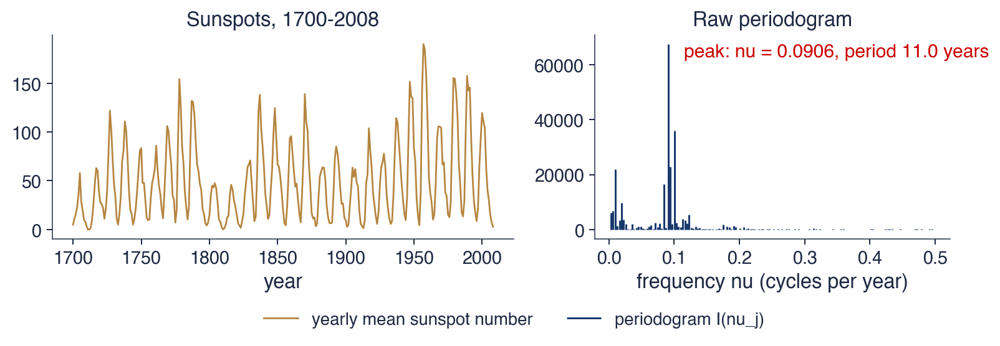

Academia de Studii Economice din București IDA Institute Digital Assets Blockchain Research Center AI4EFin Artificial Intelligence for Energy Finance Academia Română, Institutul de Prognoză Economică MSCA Digital Finance
ENTSO-E: European Network of Transmission System Operators for Electricity (rețeaua europeană a operatorilor de transport și de sistem pentru energie electrică)
EODHD: EOD Historical Data (market-data provider) — furnizor de date de piață
FFT: Fast Fourier Transform (transformata Fourier rapidă)
Întrebarea capitolului are două părți: ce cicluri conține o serie și cît din varianța ei explică fiecare ciclu. Prima parte privește locul ciclurilor, adică frecvența sau perioada lor; a doua privește importanța lor. Un ciclu poate fi prezent și totuși neglijabil, dacă explică o parte mică din variația seriei. Cele trei exemple ale capitolului acoperă scări de timp foarte diferite: ciclul de 11 ani al petelor solare, ciclul economic de cîțiva ani și ritmul zilnic și săptămînal al consumului de energie electrică.
Traseul pornește de la un singur ciclu și de la transformata Fourier discretă, care rescrie orice serie ca sumă de cicluri. Urmează densitatea spectrală, versiunea teoretică a acestei descompuneri pentru procese staționare, calculată pentru zgomot alb și pentru modelele ARMA. Periodograma este estimatorul ei direct; slăbiciunile ei, în special faptul că nu devine mai precisă cu mai multe date, motivează netezirea și benzile de încredere. Ultimele secțiuni aplică instrumentele pe date reale și le extind la memoria lungă, la filtre, la perechi de serii și, pe scurt, la wavelets.
Pe scurt
Întrebarea: ce cicluri conține o serie și cît din varianța ei explică fiecare ciclu?
exemple: ciclul de 11 ani al petelor solare, ciclul economic, ritmul zilnic și săptămînal al consumului de energie electrică
Traseul capitolului
cicluri, frecvențe și transformata Fourier discretă
densitatea spectrală a zgomotului alb și a modelelor ARMA
periodograma, slăbiciunile ei și netezirea ei
cicluri în date; memoria lungă; filtre; două serii; o trimitere spre wavelets
Capitol de studiu individual: exemple rezolvate, slide-uri de interpretare și o recapitulare după fiecare secțiune; autoevaluare cu răspunsuri la final
Primul grup de rezultate privește limbajul frecvenței. O frecvență \(\nu\), măsurată în cicluri pe observație, corespunde unei perioade de \(1/\nu\) observații și unei frecvențe unghiulare de \(2\pi\nu\) radiani pe observație; un eșantion de lungime \(T\) are frecvențele Fourier \(j/T\). Pe această bază se calculează densitatea spectrală a modelelor simple, AR(1), MA(1) și AR(2), iar forma ei se citește ca o descriere a dependenței: plată, descrescătoare, crescătoare sau cu un vîrf.
Al doilea grup este statistic. Periodograma unei serii scurte se poate calcula de mînă, iar distribuția ordonatelor ei explică de ce estimatorul brut rămîne zgomotos oricît de lung ar fi eșantionul. Atenuarea capetelor seriei, netezirea prin metodele Daniell, Bartlett sau Welch și benzile de încredere bazate pe distribuția chi-pătrat transformă periodograma într-un estimator utilizabil. Al treilea grup este empiric: identificarea ciclurilor în petele solare, în PIB și în consumul de energie electrică și citirea coerenței și a fazei dintre două serii.
Pe scurt
Treceți de la frecvență la perioadă și la frecvența unghiulară și găsiți frecvențele Fourier ale unui eșantion
Calculați densitatea spectrală a zgomotului alb și a modelelor AR(1), MA(1) și AR(2) și interpretați forma ei
Calculați de mînă periodograma unei serii scurte și explicați de ce periodograma brută nu este consistentă
Netezați periodograma (Daniell, Bartlett, Welch), aplicați o fereastră de atenuare și construiți benzi de încredere chi-pătrat
Identificați cicluri în petele solare, în PIB și în consumul de energie electrică; interpretați coerența și faza dintre două serii
Referința principală este Shumway și Stoffer (2017), capitolul 4, care tratează analiza spectrală și filtrarea la un nivel potrivit pentru acest curs. Pentru teorie, Brockwell și Davis (1991) dau demonstrațiile în capitolele 4 și 10 ale cărții, iar Hamilton (1994) prezintă analiza spectrală din perspectiva econometriei în capitolul 6. Huang și Petukhina (2022) arată aplicațiile în Python.
O diferență de notație trebuie reținută. Shumway și Stoffer (2017) măsoară frecvența \(\nu\) în cicluri pe observație, convenția folosită și aici, în timp ce în Capitolul 8 memoria lungă a fost scrisă cu frecvența unghiulară \(\lambda = 2\pi\nu\), în radiani pe observație. Formulele trec de la o convenție la alta prin înlocuirea \(\lambda = 2\pi\nu\), iar intervalul \([0, \pi]\) al frecvenței unghiulare corespunde intervalului \([0, 1/2]\) al lui \(\nu\).
Codul capitolului scrie explicit în numpy periodograma, netezirea Daniell și wavelet-ul Morlet, astfel încît fiecare pas al calculului să fie vizibil; estimarea Welch și coerența folosesc funcțiile din scipy.signal. Notebook-ul cursului reproduce calculele și graficele capitolului.
Pe scurt
Referința principală a capitolului: Shumway și Stoffer (2017), cap. 4 (analiză spectrală și filtrare)
Capitolele anterioare au descris seriile de timp prin autocorelații: cît de legată este valoarea de azi de cea de ieri, de acum o lună sau de acum un an. Multe serii au însă o structură care se descrie mai firesc prin cicluri. Numărul de pete solare urcă și coboară la aproximativ 11 ani, producția trece prin expansiuni și recesiuni, iar consumul de energie electrică repetă același tipar în fiecare zi și în fiecare săptămînă. Analiza spectrală (spectral analysis) pune întrebarea direct: ce cicluri conține o serie și ce parte din varianța ei explică fiecare ciclu?
Răspunsul este densitatea spectrală, o funcție care împarte varianța seriei pe frecvențe. Ea conține aceeași informație ca funcția de autocovarianță, dar o arată altfel: un ciclu care în autocorelații apare ca o undă amortizată, greu de citit, devine în spectru un vîrf la o frecvență precisă. Capitolul definește spectrul, îl calculează pentru modelele autoregresive cu medie mobilă (autoregressive moving average, ARMA), îl estimează din date cu periodograma și cu versiunile ei netezite și îl aplică pe petele solare, pe produsul intern brut (PIB) al Statelor Unite și al României, pe consumul orar de energie electrică al României și pe randamentele indicelui S&P 500.
Rezultatele empirice sînt clare în unele cazuri și prudente în altele. Ciclul petelor solare apare ca un vîrf la 11,0 ani, iar testul lui Fisher respinge zgomotul alb cu un p-value sub 0,001. Ciclul zilnic și armonicele lui explică 34% din varianța consumului de energie electrică. Ciclul PIB-ului american extras cu filtrul Hodrick–Prescott (HP) are 80% din varianță în banda ciclului economic, cu un vîrf la aproximativ 6,1 ani, în timp ce cele 99 de observații ale României sînt prea puține pentru un răspuns clar.

Numărul mediu anual de pete solare, 1700–2008, 309 observații (seria Wolf / SILSO, Sunspot Index and Long-term Solar Observations), și periodograma lui brută, cu vîrful principal la perioada de 11,0 ani.
Ce veți putea face
Treceți de la frecvență la perioadă și la frecvența unghiulară și găsiți frecvențele Fourier ale unui eșantion.
Calculați densitatea spectrală a zgomotului alb și a modelelor AR(1), MA(1) și AR(2) și interpretați forma ei.
Calculați de mînă periodograma unei serii scurte și explicați de ce periodograma brută nu este un estimator consistent.
Estimați spectrul prin atenuare și netezire (Daniell, Bartlett, Welch) și construiți benzi de încredere chi-pătrat.
Interpretați ciclurile din petele solare, din PIB și din consumul de energie electrică, memoria lungă, cîștigul unui filtru și coerența și faza dintre două serii.
Planul capitolului
Cicluri și frecvențeAmplitudine, frecvență și fază; frecvențele Fourier, transformata Fourier discretă, teorema lui Parseval și aliasing-ul.
Densitatea spectralăSpectrul ca transformată a autocovarianțelor; zgomot alb, AR(1), MA(1), ARMA și pseudo-ciclurile unui AR(2).
PeriodogramaEstimatorul de bază, petele solare, distribuția chi-pătrat a ordonatelor și testul lui Fisher.
Estimarea spectruluiScurgerea spectrală și atenuarea, netezirea Daniell, ferestrele de lag, metoda Welch și benzile de încredere.
RezumatIdeile principale, formulele și întrebările de autoevaluare.
Cicluri și frecvențe
Secțiunea introduce limbajul de bază al analizei spectrale: un ciclu pur și parametrii lui, frecvențele Fourier ale unui eșantion, transformata Fourier discretă, care rescrie datele ca sumă de cicluri, și limita impusă de observarea la intervale discrete, aliasing-ul.
Joseph Fourier a studiat, la începutul secolului al XIX-lea, propagarea căldurii într-un corp solid. Pentru a rezolva această problemă, el a scris temperatura ca sumă de sinusuri și cosinusuri, fiecare cu frecvența și amplitudinea lui. Ideea a devenit una dintre cele mai folosite unelte ale matematicii aplicate: o funcție complicată se descompune în cicluri pure, iar fiecare ciclu se studiază separat.
Aplicată unei serii de timp, ideea devine o întrebare statistică: ce parte din varianța seriei se află la fiecare frecvență? Capitolele 1–8 au descris o serie staționară în domeniul timpului (time domain), prin funcția de autocorelație (autocorrelation function, ACF). Domeniul frecvenței (frequency domain) descrie aceeași serie prin spectru.
Cele două descrieri sînt echivalente din punct de vedere matematic, așa cum va arăta secțiunea a doua, dar nu sînt la fel de ușor de citit. Un ciclu de 11 ani apare în ACF ca o undă amortizată care se întinde pe zeci de lagi, amestecată cu celelalte componente ale seriei; în spectru, același ciclu este un singur vîrf, a cărui poziție dă perioada și a cărui arie dă partea din varianță.
Cel mai simplu obiect al analizei spectrale este ciclul pur \(x_t = A\cos(2\pi\nu t + \varphi)\). Amplitudinea (amplitude) \(A\) este înălțimea undei, faza (phase) \(\varphi\) fixează punctul în care se află unda la \(t = 0\), iar frecvența (frequency) \(\nu\) spune ce fracțiune dintr-un ciclu se parcurge de la o observație la următoarea. Perioada \(1/\nu\) este numărul de observații dintr-un ciclu complet. Frecvența unghiulară (angular frequency) \(\omega = 2\pi\nu\) măsoară același lucru în radiani pe observație.
Frecvența nu are sens fără unitatea de timp a datelor. Pentru date lunare, un ciclu anual are \(\nu = 1/12\) cicluri pe lună. Pentru date orare, ciclul zilnic are \(\nu = 1/24\), iar pentru date trimestriale un ciclu de 6 ani are tot \(\nu = 1/24\): aceeași frecvență pe observație poate descrie fenomene complet diferite. De aceea, orice rezultat spectral trebuie transformat la sfîrșit în perioade exprimate în unități de timp concrete.
Forma \(a\cos(2\pi\nu t) + b\sin(2\pi\nu t)\), cu \(a = A\cos\varphi\) și \(b = -A\sin\varphi\), rezultă din formula cosinusului unei sume. Ea este utilă deoarece, pentru o frecvență dată, este liniară în \(a\) și \(b\): amplitudinea și faza unui ciclu de frecvență cunoscută se estimează printr-o regresie cu metoda celor mai mici pătrate (ordinary least squares, OLS) pe un cosinus și un sinus, iar \(A = \sqrt{a^2 + b^2}\). Cea mai mare frecvență care se poate observa în date discrete este \(\nu = 1/2\), un ciclu la două observații, numită frecvența Nyquist (Nyquist frequency).
Pe scurt
Un ciclu pur: \(x_t = A\cos(2\pi\nu t + \varphi)\), \(t = 1, 2, \ldots\)
\(A\): amplitudinea (înălțimea undei); \(\varphi\): faza (punctul de pornire al undei)
\(\nu\): frecvența, în cicluri pe observație; perioada\(1/\nu\) este numărul de observații dintr-un ciclu
frecvența unghiulară \(\omega = 2\pi\nu\), în radiani pe observație
Exemplu: date lunare cu un ciclu anual: \(\nu = 1/12\) cicluri pe lună, perioada 12 luni
date orare cu un ciclu zilnic: \(\nu = 1/24\); date trimestriale cu un ciclu de 6 ani: tot \(\nu = 1/24\)
Forma echivalentă: \(A\cos(2\pi\nu t + \varphi) = a\cos(2\pi\nu t) + b\sin(2\pi\nu t)\)
cu \(a = A\cos\varphi\), \(b = -A\sin\varphi\) și \(A^2 = a^2 + b^2\): liniară în \(a\) și \(b\), deci se poate estima prin OLS
Cea mai mare frecvență vizibilă în date discrete este \(\nu = 1/2\) (un ciclu la două observații): frecvența Nyquist
Întrebare pentru sală Puneți φ = 1,5 radiani, cu A = 2. Cît sînt a și b?
Răspuns
a = 2 cos 1,5 = 0,14 și b = −2 sin 1,5 = −1,99: cu o fază apropiată de π/2 ciclul este aproape un sinus pur, cu semn negativ. Oricare ar fi faza, a² + b² = 4 = A².
Întrebare pentru sală ▶ mută x₃. Cu x = (4, 2, 4, 2), unde se află varianța?
Răspuns
Toată la ν = 1/2: abaterile (1, −1, 1, −1) alternează, deci |d(1/2)|² = (−4)²/4 = 4, iar |d(1/4)|² = |d(3/4)|² = 0; Parseval: 4 = 1 + 1 + 1 + 1. Seria are perioada 2.
Întrebare pentru sală Puneți amplitudinea ciclului de perioadă 4 la 2, cît amplitudinea ciclului anual. Cît de înalt devine vîrful de la ν = 1/4?
Răspuns
119,2, de patru ori mai înalt decît cu amplitudinea 1 (29,6) și aproape de teoria A²T/4 = 4·120/4 = 120: vîrful crește cu pătratul amplitudinii. Vîrful de la 1/12 rămîne 139,7, peste valoarea teoretică 120, pentru că la aceeași frecvență contribuie și zgomotul; fără zgomot cele două vîrfuri sînt exact 120 și 30.
Seria simulată are 120 de observații și combină două cicluri: unul cu perioada 12 și amplitudinea 2 și unul cu perioada 4, amplitudinea 1 și faza 1. Peste ele se adaugă un zgomot alb (white noise) Normal cu varianța 0,49. Dacă observațiile ar fi lunare, primul ciclu ar fi anual, iar al doilea ar avea patru luni.
Panoul din stînga arată seria în domeniul timpului. Ciclul de 12 se recunoaște vag, ca o alternanță de valori mari și mici, dar ciclul de 4 și zgomotul se suprapun peste el. Panoul din dreapta arată periodograma aceleiași serii, adică, la fiecare frecvență Fourier, o mărime proporțională cu pătratul amplitudinii ciclului cel mai potrivit; definiția exactă vine în secțiunea a treia. Pe axa orizontală se află frecvența, de la 0 la frecvența Nyquist 1/2.
Pe scurt
Serie simulată, \(T = 120\): \(x_t = 2\cos(2\pi t/12) + \cos(2\pi t/4 + 1) + \varepsilon_t\), \(\varepsilon_t \sim N(0;\ 0{,}49)\) (zgomot alb Normal cu varianța 0,49); dreapta: periodograma ei (definită în secțiunea 3)
În domeniul frecvenței, cele două cicluri sînt separate complet: apar ca două vîrfuri izolate, la \(\nu = 1/12\) și la \(\nu = 1/4\), iar restul periodogramei este jos și aproape plat. Înălțimile observate ale vîrfurilor sînt 139,7 și 29,6. Pentru un ciclu de amplitudine \(A\) situat exact la o frecvență Fourier, înălțimea teoretică este \(A^2T/4\), adică \(4 \cdot 120/4 = 120\) pentru primul ciclu și \(1 \cdot 120/4 = 30\) pentru al doilea. Diferențele față de teorie provin din zgomot, care adaugă sau scade puțin la fiecare frecvență.
Raportul dintre vîrfuri arată că periodograma măsoară puterea, nu amplitudinea. Primul ciclu are amplitudinea de două ori mai mare, iar vîrful lui este de patru ori mai înalt. Cele două vîrfuri concentrează împreună 85% din puterea totală a seriei; zgomotul alb împrăștie restul uniform pe toate frecvențele, astfel încît nicio frecvență nu primește o parte mare. Aceasta este, în miniatură, ideea întregului capitol: un ciclu concentrează varianța la o frecvență, zgomotul o întinde pe toate.
Pe scurt
În domeniul timpului cele două cicluri sînt greu de separat cu ochiul liber
în domeniul frecvenței ele sînt două vîrfuri izolate, la \(\nu = 1/12\) și \(\nu = 1/4\)
Înălțimea vîrfurilor: 139,7 și 29,6; teoria, pentru un ciclu de amplitudine \(A\) la o frecvență Fourier: \(A^2T/4\), adică 120 și 30
vîrful crește cu pătratul amplitudinii: ciclul mai mare domină
Cele două vîrfuri concentrează 85% din puterea totală; zgomotul împrăștie restul uniform pe toate frecvențele
Frecvențele Fourier și transformata Fourier discretă (1/2)
Un eșantion de \(T\) observații nu poate distinge orice frecvență. Frecvențele naturale ale eșantionului sînt frecvențele Fourier (Fourier frequencies) \(\nu_j = j/T\), pentru \(j = 0, 1, \ldots, \lfloor T/2 \rfloor\): ciclurile care încap exact de \(j\) ori în eșantion. Pentru \(T = 120\) de observații lunare, \(j = 10\) dă \(\nu = 1/12\), ciclul anual, care încape de zece ori; \(j = 1\) dă un singur ciclu pe tot eșantionul, cel mai lent ciclu care se poate observa complet.
Transformata Fourier discretă (discrete Fourier transform, DFT) măsoară, la fiecare frecvență Fourier, cît de puternic se mișcă seria împreună cu un ciclu de acea frecvență:
\[d(\nu_j) = T^{-1/2}\sum_{t=1}^{T} x_t\, e^{-2\pi i \nu_j t}.\]
(12.1)
Formula lui Euler, \(e^{-i\theta} = \cos\theta - i\sin\theta\), arată ce face exponențiala complexă: partea reală a lui \(d(\nu_j)\) este, pînă la factorul \(T^{-1/2}\), produsul scalar al seriei cu un cosinus, iar partea imaginară, cu semn schimbat, produsul scalar cu un sinus de aceeași frecvență. Un produs scalar mare înseamnă că seria și unda urcă și coboară împreună.
Numerele complexe sînt aici doar o scriere compactă. Ambele corelații, cu cosinusul și cu sinusul, sînt necesare deoarece ciclul din date poate avea orice fază: un cosinus singur ar rata un ciclu decalat cu un sfert de perioadă. Modulul pătrat \(|d(\nu_j)|^2 = (\mathrm{Re}\,d)^2 + (\mathrm{Im}\,d)^2\) adună cele două contribuții și nu mai depinde de fază.
Pe scurt
Pentru un eșantion \(x_1, \ldots, x_T\), frecvențele Fourier sînt \(\nu_j = j/T\), \(j = 0, 1, \ldots, \lfloor T/2 \rfloor\)
ciclurile care încap de un număr întreg de ori (\(j\) ori) în eșantion; \(\lfloor T/2 \rfloor\): partea întreagă a lui \(T/2\)
Transformata Fourier discretă (DFT) măsoară cît de puternic se mișcă seria împreună cu un ciclu de frecvență \(\nu_j\)
\(d(\nu_j) = T^{-1/2}\sum_{t=1}^{T} x_t\, e^{-2\pi i \nu_j t}\)
Cele \(T\) valori \(d(\nu_j)\), pentru \(j = 0, \ldots, T-1\), conțin exact aceeași informație ca cele \(T\) observații: transformata inversă reconstituie seria fără nicio pierdere. DFT este deci o schimbare de coordonate, nu o aproximare. Seria se scrie ca sumă de cicluri la frecvențele Fourier, iar \(d(\nu_j)\) dă coeficientul fiecărui ciclu.
Teorema lui Parseval spune că această schimbare de coordonate păstrează și suma pătratelor:
În stînga se află suma pătratelor abaterilor de la media de selecție \(\bar x\), adică \(T\) înmulțit cu varianța de selecție; în dreapta, suma pătratelor modulelor DFT la toate frecvențele nenule. Frecvența zero lipsește deoarece \(d(0)\) este proporțional cu media, care a fost scăzută. Interpretarea este centrală pentru tot capitolul: varianța seriei se împarte exact pe frecvențe, iar fiecare \(|d(\nu_j)|^2\) este contribuția ciclului de frecvență \(\nu_j\).
Calculul direct al tuturor celor \(T\) valori cere un număr de operații de ordinul \(T^2\), deoarece fiecare valoare este o sumă de \(T\) termeni. Transformata Fourier rapidă (fast Fourier transform, FFT) a lui Cooley și Tukey (1965) reduce costul la ordinul \(T\log T\), prin împărțirea recursivă a sumei în sume mai mici. Pentru seriile lungi din acest capitol, de exemplu zeci de mii de ore de consum de energie electrică, diferența transformă un calcul lent într-unul instantaneu.
Pe scurt
Cele \(T\) valori \(d(\nu_j)\) conțin exact aceeași informație ca cele \(T\) observații
datele se pot reconstitui din ele prin transformata inversă
Parseval
suma pătratelor abaterilor este egală cu suma pătratelor modulelor DFT
Exemplul folosește patru observații, \(x = (4, 2, 0, 2)\), cu media 2 și abaterile \(y = (2, 0, -2, 0)\). Cu \(T = 4\), frecvențele Fourier nenule de pînă la Nyquist sînt \(\nu_1 = 1/4\), un ciclu de perioadă 4, care încape o dată în eșantion, și \(\nu_2 = 1/2\), un ciclu de perioadă 2. Abaterile urcă, coboară și revin într-un singur val, deci toată variația ar trebui să se afle la perioada 4.
La \(\nu = 1/4\), exponențiala \(e^{-i\pi t/2}\) ia valorile \(-i\),\(-1\),\(i\) și \(1\) pentru \(t = 1, 2, 3, 4\). Doar \(t = 1\) și \(t = 3\) au abateri nenule, astfel că suma este \(2(-i) + (-2)(i) = -4i\), iar împărțirea la \(\sqrt 4 = 2\) dă \(d(1/4) = -2i\), cu \(|d(1/4)|^2 = 4\). La \(\nu = 1/2\), exponențiala este \((-1)^t\), iar suma \(-2 + 2 = 0\): seria nu are nicio componentă de perioadă 2. Valoarea de la \(\nu = 3/4\) este conjugata celei de la \(1/4\) și are același modul pătrat, 4.
Verificarea cu (12.2):\(4 + 0 + 4 = 8\), egal cu suma pătratelor abaterilor, \(2^2 + 0^2 + (-2)^2 + 0^2 = 8\). Împărțită la \(T = 4\), aceasta dă varianța de selecție 2, aflată în întregime la perioada 4. Linia de cod din slide face același calcul cu FFT și dă vectorul \((0, 4, 0, 4)\) pentru frecvențele \(0\),\(1/4\),\(1/2\) și \(3/4\).
Întrebare pentru sală Puneți perioada ciclului adevărat la 2,5 luni, cu observații trimestriale (Δ = 3). Ce perioadă pare să aibă ciclul?
Răspuns
15 luni: 3/2,5 = 1,2 cicluri pe trimestru, care se pliază la |1,2 − 1| = 0,2, adică 5 trimestre. Un ciclu mai rapid decît observațiile apare ca un ciclu mai lent, fals.
Întrebare pentru sală ▶ modifică intervalul de observare. La Δ = 4 luni (o observație pe ciclu), ce arată observațiile?
Răspuns
O constantă: ciclul are 4/4 = 1 ciclu pe observație, care se pliază la |1 − 1| = 0, deci fiecare observație cade în același punct al ciclului și ciclul de 4 luni dispare din date (un alias de perioadă infinită). La Δ = 5 luni același ciclu apare ca un ciclu de 20 de luni.
Graficul arată un ciclu cu perioada de 4 luni, deci cu frecvența \(\nu = 1/4\) cicluri pe lună, observat doar o dată la trei luni, ca într-o statistică trimestrială. Curba continuă este ciclul adevărat; punctele sînt valorile înregistrate la fiecare trimestru. Între două puncte succesive, ciclul adevărat parcurge trei sferturi dintr-o perioadă.
Punctele trimestriale par să urmeze o undă mult mai lentă decît cea adevărată, iar graficul trasează și această undă, cu perioada de 12 luni, care trece prin aceleași puncte. Pentru cineva care vede doar datele trimestriale, cele două unde nu se pot deosebi.
Pe scurt
Un ciclu de 4 luni (\(\nu = 1/4\) pe lună), observat doar o dată pe trimestru (la fiecare 3 luni)
Explicația este aritmetică. Măsurat în trimestre, ciclul de 4 luni are frecvența \(3 \times 1/4 = 3/4\) cicluri pe trimestru, peste frecvența Nyquist 1/2 a datelor trimestriale. O frecvență peste Nyquist nu dispare, ci se pliază înapoi în intervalul \([0, 1/2]\):\(|3/4 - 1| = 1/4\) cicluri pe trimestru, adică o perioadă de 4 trimestre sau 12 luni. Motivul este că \(\cos(2\pi \cdot \tfrac34 t)\) și \(\cos(2\pi \cdot \tfrac14 t)\) iau aceleași valori pentru orice \(t\) întreg, deoarece frecvențele lor diferă printr-un ciclu întreg pe observație.
Acesta este fenomenul de aliasing: un ciclu mai rapid decît două observații apare în date ca un ciclu mai lent, fals. Pericolul este practic. O serie trimestrială sau anuală construită prin alegerea unei singure valori din fiecare perioadă poate conține cicluri lente care nu există în realitate, ci provin din ritmuri rapide ale datelor de bază.
Prevenirea are două părți. Frecvența de eșantionare trebuie să fie de cel puțin două ori mai mare decît frecvența ciclului de interes, adică fiecare ciclu trebuie să conțină cel puțin două observații. Iar la agregarea pe o frecvență mai mică, de exemplu de la luni la trimestre, se face media valorilor din perioadă, nu se alege una dintre ele: media atenuează ciclurile rapide înainte ca ele să se poată plia peste cele lente.
Pe scurt
Pe trimestru, frecvența adevărată este \(3 \times 1/4 = 3/4\) cicluri, peste frecvența Nyquist \(1/2\)
ea se pliază înapoi la \(|3/4 - 1| = 1/4\) cicluri pe trimestru: o perioadă de 4 trimestre, adică 12 luni
Punctele trimestriale cad exact pe o undă de 12 luni: datele nu pot deosebi cele două cicluri
acesta este aliasing: ciclurile mai rapide decît două observații apar ca cicluri mai lente, false
Regula practică: eșantionați de cel puțin două ori pe ciclul de interes; la agregarea pe o frecvență mai mică, faceți media valorilor, nu alegeți una dintre ele
Un ciclu pur are o amplitudine, o frecvență în cicluri pe observație, o perioadă egală cu inversul frecvenței și o fază. Transformata Fourier discretă (12.1) rescrie un eșantion ca sumă de cicluri la frecvențele Fourier \(j/T\), fără pierdere de informație, iar teorema lui Parseval (12.2) împarte suma pătratelor abaterilor pe aceste frecvențe. Datele discrete arată doar frecvențele pînă la 1/2; ciclurile mai rapide apar ca aliasuri, la frecvențe mai mici.
Pe scurt
Un ciclu are o amplitudine, o frecvență \(\nu\) (cicluri pe observație), o perioadă \(1/\nu\) și o fază
DFT la frecvențele Fourier \(j/T\) rescrie datele ca sumă de cicluri; Parseval împarte varianța pe frecvențe
Sînt vizibile doar frecvențele pînă la \(1/2\); ciclurile mai rapide apar ca aliasuri
Sinteza secțiunii
Secțiunea a lucrat cu un eșantion dat: DFT descompune varianța observată pe frecvențe. Pentru inferență este nevoie de obiectul teoretic corespunzător, o funcție care spune cum se distribuie varianța unui proces staționar pe frecvențe. Aceasta este densitatea spectrală, legată direct de autocovarianțele folosite în capitolele anterioare.
Densitatea spectrală
Secțiunea definește densitatea spectrală ca transformată Fourier a funcției de autocovarianță, o calculează pentru zgomotul alb, pentru AR(1), pentru MA(1) și pentru modelele ARMA în general și arată cum produce un AR(2) cu rădăcini complexe un vîrf, adică un pseudo-ciclu.
A doua formă rezultă din simetria \(\gamma(-h) = \gamma(h)\): termenii cu sinus se anulează în perechi. Condiția \(\sum_h|\gamma(h)| < \infty\) cere ca autocovarianțele să se stingă suficient de repede, adică seria să aibă memorie scurtă; atunci suma converge și \(f\) este o funcție continuă.
Formula se citește ca o sumă ponderată a autocovarianțelor, cu ponderile \(\cos(2\pi\nu h)\). La \(\nu = 0\) toate ponderile sînt 1, iar \(f(0)\) este suma tuturor autocovarianțelor: mare pentru o serie persistentă, cu autocovarianțe pozitive. La o frecvență \(\nu\) oarecare, ponderile oscilează cu perioada \(1/\nu\), deci \(f(\nu)\) este mare dacă seria are autocovarianțe pozitive la lagi multipli de \(1/\nu\) și negative la jumătăți de perioadă: exact semnătura unui ciclu de perioadă \(1/\nu\).
Relația inversă, \(\gamma(h) = \int_{-1/2}^{1/2} f(\nu)e^{2\pi i\nu h}\,d\nu\), arată că autocovarianțele se pot recupera din spectru; perechea \(\gamma \leftrightarrow f\) este teorema Wiener–Khinchin. Pentru \(h = 0\) ea dă \(\Var(x_t) = \int_{-1/2}^{1/2} f(\nu)\,d\nu\): aria de sub spectru este varianța. Deoarece \(f\) este nenegativă și simetrică, este suficient să fie desenată pe \([0, 1/2]\), iar \(f(\nu)\,d\nu\) se interpretează ca partea din varianță datorată ciclurilor cu frecvențe între \(\nu\) și \(\nu + d\nu\). Aceasta este versiunea teoretică a teoremei lui Parseval.
Pe scurt
Pentru o serie staționară cu autocovarianțele \(\gamma(h)\), \(\sum_h|\gamma(h)| < \infty\), densitatea spectrală este
Zgomotul alb are toate autocovarianțele nule, cu excepția lui \(\gamma(0) = \sigma^2\), deci suma din (12.3) are un singur termen și \(f(\nu) = \sigma^2\) la orice frecvență. Spectrul plat înseamnă că toate frecvențele contribuie în mod egal la varianță, la fel cum lumina albă conține toate culorile; de aici vine numele procesului.
Pentru AR(1), \(x_t = \phi x_{t-1} + w_t\) cu \(|\phi| < 1\), autocovarianțele sînt \(\gamma(h) = \sigma^2\phi^{|h|}/(1 - \phi^2)\), iar suma din (12.3) este o serie geometrică:
Numitorul este cel mai mic acolo unde \(\phi\cos(2\pi\nu)\) este cel mai mare. Pentru \(\phi > 0\), aceasta se întîmplă la \(\nu = 0\): spectrul descrește de la frecvențele joase spre cele înalte, iar seria este netedă și persistentă. Pentru \(\phi < 0\), numitorul este minim la \(\nu = 1/2\): puterea se află la frecvențele înalte, iar seria își schimbă des semnul de la o observație la alta, în zigzag.
Pentru MA(1), \(x_t = w_t + \theta w_{t-1}\), singurele autocovarianțe nenule sînt \(\gamma(0) = \sigma^2(1 + \theta^2)\) și \(\gamma(\pm 1) = \sigma^2\theta\). Suma din (12.3) are trei termeni și dă direct \(f(\nu) = \sigma^2[1 + 2\theta\cos(2\pi\nu) + \theta^2]\). Semnul lui \(\theta\) joacă același rol ca semnul lui \(\phi\):\(\theta > 0\) mută puterea spre frecvențele joase, \(\theta < 0\) spre cele înalte. Spectrul unui MA(1) conține un singur cosinus, deci este monoton pe \([0, 1/2]\) și nu poate avea un vîrf interior.
Pe scurt
Zgomot alb\(w_t\), cu varianța \(\sigma^2\)
\(\gamma(h) = 0\) pentru \(h \ne 0\), deci \(f(\nu) = \sigma^2\) pentru orice \(\nu\)
un spectru plat: toate frecvențele contribuie în mod egal, ca lumina albă
Modelul ARMA\((p,q)\) se scrie compact \(\phi(L)x_t = \theta(L)w_t\), unde \(L\) este operatorul lag, \(Lx_t = x_{t-1}\), iar \(\phi(z) = 1 - \phi_1 z - \cdots - \phi_p z^p\) și \(\theta(z) = 1 + \theta_1 z + \cdots + \theta_q z^q\) sînt polinoamele AR și MA. Densitatea spectrală se obține evaluînd cele două polinoame pe cercul unitate, în \(z = e^{-2\pi i\nu}\):
Rezultatul are o explicație simplă, care revine în secțiunea despre filtre: un model ARMA este zgomot alb trecut printr-un filtru liniar, iar un filtru înmulțește spectrul intrării cu pătratul modulului răspunsului lui în frecvență. Partea MA, la numărător, adaugă putere acolo unde \(|\theta(e^{-2\pi i\nu})|\) este mare. Partea AR, la numitor, adaugă putere acolo unde \(|\phi(e^{-2\pi i\nu})|\) este mic, adică la frecvențele apropiate de rădăcinile polinomului AR; o rădăcină aproape de cercul unitate produce un vîrf înalt. Formulele pentru AR(1) și MA(1) din slide-ul anterior sînt cazuri particulare.
Deoarece \(|a + bi|^2 = a^2 + b^2\), ambele module pătrate sînt polinoame în \(\cos(2\pi\nu)\), deci spectrul ARMA este un raport de două polinoame trigonometrice: o funcție netedă, calculabilă exact la orice frecvență (Brockwell și Davis, 1991). Această netezime a spectrelor modelelor uzuale justifică, în secțiunea a patra, netezirea periodogramei.
Pe scurt
ARMA\((p,q)\)
\(\phi(L)x_t = \theta(L)w_t\)
\(L\): operatorul lag, \(Lx_t = x_{t-1}\)
\(\phi(z) = 1 - \phi_1 z - \cdots - \phi_p z^p\) și \(\theta(z) = 1 + \theta_1 z + \cdots + \theta_q z^q\): polinoamele AR și MA
Densitatea spectrală: cele două polinoame evaluate în \(z = e^{-2\pi i\nu}\)
Pentru AR(1) cu \(\phi = 0{,}6\) și \(\sigma^2 = 1\), formula (12.4) se evaluează la cele două capete ale intervalului de frecvențe. La \(\nu = 0\),\(\cos 0 = 1\) și numitorul este \((1 - 0{,}6)^2 = 0{,}16\), deci \(f(0) = 6{,}25\). La \(\nu = 1/2\),\(\cos\pi = -1\) și numitorul este \((1 + 0{,}6)^2 = 2{,}56\), deci \(f(1/2) = 0{,}39\). Raportul celor două valori este 16: ciclurile foarte lente poartă, pe unitatea de frecvență, de 16 ori mai multă varianță decît cele mai rapide.
Pentru MA(1) cu \(\theta = 0{,}5\),\(f(0) = (1 + 0{,}5)^2 = 2{,}25\) și \(f(1/2) = (1 - 0{,}5)^2 = 0{,}25\), un raport de 9. Ambele spectre descresc, dar cel al AR(1) mai abrupt: un AR(1) are autocovarianțe nenule la toți lagii, în timp ce un MA(1) are una singură, la lagul 1.
Verificarea ariei confirmă legătura dintre spectru și varianță. Pentru AR(1), \(\gamma(0) = \sigma^2/(1 - \phi^2) = 1/0{,}64 = 1{,}5625\), iar integrala numerică a formulei (12.4) pe \([-1/2, 1/2]\) dă aceeași valoare. Deși \(f(0) = 6{,}25\) este mult peste varianță, valorile mari ocupă un interval îngust de frecvențe joase, astfel încît aria totală rămîne 1,5625.
Comportamentul depinde de rădăcinile polinomului AR. Cînd ele sînt reale, spectrul seamănă cu cel al unui AR(1). Cînd sînt complexe, adică \(\phi_1^2 + 4\phi_2 < 0\), ACF este o undă sinusoidală amortizată, iar spectrul are un vîrf în interiorul intervalului \((0, 1/2)\).
Poziția vîrfului se obține minimizînd numitorul. Cu notația \(c = \cos(2\pi\nu)\), numitorul se dezvoltă în
un polinom de gradul al doilea în \(c\). Pentru \(\phi_2 < 0\) coeficientul lui \(c^2\) este pozitiv, iar minimul se află la \(c^* = \phi_1(\phi_2 - 1)/(4\phi_2)\). Vîrful există la frecvența \(\nu^* = \arccos(c^*)/(2\pi)\) doar dacă \(c^*\) se află în \([-1, 1]\).
Un AR(2) cu rădăcini complexe nu produce un ciclu regulat, ci un pseudo-ciclu (pseudo-cycle): seria oscilează cu o perioadă tipică, dar lungimea și amplitudinea fiecărei oscilații variază, deoarece șocurile \(w_t\) împing permanent unda. Yule (1927) a introdus exact acest model pentru numerele de pete solare ale lui Wolfer: în locul unei sinusoide fixe plus erori, o oscilație perturbată continuu de șocuri. A fost primul model autoregresiv. Ciclurile economice din secțiunea a cincea au aceeași natură: recurente, dar niciodată de aceeași lungime.
Pentru \(\phi_1 = 1{,}5\),\(\phi_2 = -0{,}75\) și \(\sigma^2 = 1\), condiția \(1{,}5^2 + 4(-0{,}75) = -0{,}75 < 0\) arată că rădăcinile sînt complexe. Formula poziției vîrfului dă \(\cos(2\pi\nu^*) = 1{,}5 \cdot (-1{,}75)/(-3) = 0{,}875\), o valoare în \([-1, 1]\), deci \(\nu^* = \arccos(0{,}875)/(2\pi) = 0{,}0804\) cicluri pe observație, iar perioada este \(1/\nu^* = 12{,}4\) observații. Pentru date anuale, aceasta ar fi o oscilație de aproximativ 12 ani, apropiată de ciclul petelor solare.
Înălțimea vîrfului este \(f(\nu^*) = 64\), de patru ori mai mare decît valoarea de la frecvența zero, \(f(0) = 1/(1 - 1{,}5 + 0{,}75)^2 = 1/0{,}0625 = 16\). Spectrul crește de la 16 la 64 între \(\nu = 0\) și \(\nu = 0{,}0804\) și scade apoi rapid spre frecvențele înalte. Un vîrf atît de clar înseamnă că seria are o perioadă tipică de aproximativ 12 observații, chiar dacă nicio oscilație individuală nu are exact această lungime.
Același model servește în secțiunea a patra drept caz de test pentru estimatorii spectrului. Avantajul unui model simulat este că spectrul lui adevărat este cunoscut, deci eroarea fiecărui estimator se poate măsura direct.
Întrebare pentru sală Puneți φ = −0,6. Cît sînt f(0) și f(1/2)?
Răspuns
f(0) = 1/1,6² = 0,39 și f(1/2) = 1/0,4² = 6,25: imaginea în oglindă a cazului φ = 0,6. Un φ negativ face seria să alterneze, deci puterea trece la frecvențele cele mai înalte; varianța rămîne 1,5625.
Întrebare pentru sală ▶ mută φ₂ spre −0,95, cu φ₁ = 1,5. Vîrful se mută spre o perioadă mai lungă sau mai scurtă?
Răspuns
Spre una mai scurtă: 9,1 observații la φ₂ = −0,95 (12,4 la −0,75 și 20,2 la −0,65), iar vîrful devine mult mai înalt (981 față de 64). Un φ₂ mai negativ aduce rădăcinile complexe mai aproape de cercul unitate (modulul lor este √−φ₂) și accelerează oscilația ACF.
Întrebare pentru sală Mutați limita superioară la ν = 0,1. Ce pondere din varianța AR(1) cu φ = 0,6 se află la frecvențele sub 0,1 (perioade de peste 10 observații)?
Răspuns
58%, față de 20% pentru zgomotul alb, care își împrăștie varianța uniform: banda [0; 0,1] este o cincime din [0; 0,5]. Pentru AR(2) ponderea este 81%, pentru AR(1) cu φ = −0,6 doar 5%.
Galeria desenează spectrele teoretice a șase procese, toate cu \(\sigma^2 = 1\), pe intervalul \(0 \le \nu \le 1/2\): zgomot alb, AR(1) cu \(\phi = 0{,}6\) și cu \(\phi = -0{,}6\), MA(1) cu \(\theta = 0{,}5\), AR(2) cu \(\phi = (1{,}5;\ -0{,}75)\) și ARMA(1,1) cu \(\phi = 0{,}6\) și \(\theta = 0{,}4\). Fiecare panou are propria scară verticală, deci se compară formele curbelor, nu înălțimile lor.
Aria hașurată de sub fiecare curbă este jumătate din varianța procesului, deoarece spectrul este simetric și se desenează doar jumătatea pozitivă a intervalului de frecvențe. Cele două procese AR(1) au aceeași varianță, 1,5625, și spectre oglindite: unul are puterea la frecvențele joase, celălalt la cele înalte.
Pe scurt
Spectre teoretice, cu \(\sigma^2 = 1\), pe \(0 \le \nu \le 1/2\); aria hașurată este jumătate din varianță
Locul în care se află puterea arată tipul de dependență. Un spectru plat înseamnă lipsa oricărei dependențe liniare. Un spectru descrescător, ca la AR(1) cu \(\phi > 0\), MA(1) cu \(\theta > 0\) și ARMA(1,1), înseamnă persistență pozitivă: valorile mari tind să fie urmate de valori mari. Un spectru crescător, ca la AR(1) cu \(\phi < 0\), înseamnă alternanță de semne. O cocoașă în interiorul benzii, ca la AR(2), înseamnă un pseudo-ciclu, cu perioada dată de poziția cocoașei.
AR(2) își concentrează varianța totală de 8,62 într-o bandă îngustă în jurul lui \(\nu = 0{,}0804\); în afara acestei benzi spectrul este mic. ARMA(1,1) adaugă la AR(1) un termen MA pozitiv, care pune și el putere la frecvențele joase: \(f(0) = 12{,}25\), aproape dublu față de valoarea 6,25 a AR(1) cu același \(\phi\), iar scăderea spre frecvențele înalte este mai abruptă.
Galeria sugerează o ordine de lucru complementară identificării prin ACF. Se estimează întîi spectrul din date, se privește forma lui și apoi se alege un model a cărui densitate spectrală are o formă asemănătoare. Un vîrf interior cere cel puțin un AR(2); o pantă monotonă poate fi descrisă de un AR(1) sau de un ARMA de ordin mic.
Pe scurt
Locul în care se află puterea arată tipul de dependență
plat: nicio dependență (zgomot alb); descrescător: persistență pozitivă (AR(1) cu \(\phi > 0\), MA(1) cu \(\theta > 0\), ARMA(1,1))
crescător: alternanță de semne (AR(1) cu \(\phi < 0\)); o cocoașă în interiorul benzii: un pseudo-ciclu (AR(2))
AR(2) își concentrează varianța 8,62 într-o bandă îngustă în jurul lui \(\nu = 0{,}0804\)
ARMA(1,1) adaugă termenul MA la AR(1): \(f(0) = 12{,}25\), o scădere mai abruptă
Ordinea de lucru: estimați spectrul din date, priviți forma lui, apoi alegeți un model care are un spectru asemănător
Densitatea spectrală (12.3) este transformata Fourier a autocovarianțelor; aria de sub ea este varianța, iar ea conține aceeași informație ca ACF. Zgomotul alb are spectrul plat, un AR(1) cu \(\phi > 0\) pune puterea la frecvențele joase, iar un AR(2) cu rădăcini complexe produce un vîrf interior, semnătura unui pseudo-ciclu. Orice model ARMA are spectrul (12.5), un raport de polinoame trigonometrice.
Pe scurt
\(f(\nu) = \sum_h\gamma(h)e^{-2\pi i\nu h}\); aria de sub \(f\) este varianța; \(f\) și ACF sînt echivalente
Zgomotul alb are spectrul plat; AR(1) cu \(\phi > 0\) pune puterea la frecvențele joase; AR(2) cu rădăcini complexe dă un vîrf
Densitatea spectrală este un obiect teoretic: pentru a o calcula trebuie cunoscute autocovarianțele sau parametrii modelului. Secțiunea următoare trece la date și construiește estimatorul ei natural, periodograma, în care autocovarianțele teoretice sînt înlocuite cu cele de selecție.
Periodograma
Secțiunea definește periodograma, o aplică seriei anuale a petelor solare, descrie distribuția ordonatelor ei și arată de ce estimatorul brut nu devine mai precis cu mai multe date. Testul lui Fisher răspunde la întrebarea dacă cel mai înalt vîrf poate fi întîmplător.
Schuster (1898) a introdus periodograma (periodogram) pentru a căuta „periodicități ascunse” în date meteorologice, într-un studiu dedicat unui presupus ciclu de 26 de zile. Contribuția lui nu a fost doar calculul amplitudinii la fiecare perioadă, ci și întrebarea statistică ce îl însoțește: cît de mare poate deveni un vîrf din simpla întîmplare, atunci cînd datele nu conțin niciun ciclu? Aceeași întrebare stă în centrul acestei secțiuni.
Exemplul clasic al analizei spectrale este seria petelor solare. Petele sînt numărate zilnic încă din secolul al XVIII-lea, iar Rudolf Wolf a construit în 1848 indicele standard al activității solare. Seria a apărut deja în Capitolul 0. Întrebarea secțiunii este cum se estimează \(f(\nu)\) dintr-un singur eșantion, ca acesta, și cît de sigură este estimarea.
A doua formă arată că periodograma este formula spectrului (12.3) în care autocovarianțele teoretice sînt înlocuite cu autocovarianțele de selecție \(\hat\gamma(h)\), pentru toți lagii disponibili. Este deci estimatorul cel mai direct al lui \(f\).
Interpretarea prin regresie leagă periodograma de ciclul pur de la începutul capitolului. Dacă \(x_t\) se regresează prin OLS pe \(\cos(2\pi\nu_j t)\) și \(\sin(2\pi\nu_j t)\), cu coeficienții \(a_j\) și \(b_j\), atunci \(I(\nu_j) = \frac{T}{4}(a_j^2 + b_j^2)\). Cum \(a_j^2 + b_j^2\) este pătratul amplitudinii ciclului estimat, periodograma este pătratul amplitudinii celui mai bun ciclu de frecvență \(\nu_j\), înmulțit cu \(T/4\). De aici provine înălțimea teoretică \(A^2T/4\) a vîrfurilor din exemplul cu două cicluri.
Scrisă cu periodograma, teorema lui Parseval (12.2) devine \(\hat\gamma(0) = \frac{1}{T}\sum_{j=1}^{T-1} I(\nu_j)\): media ordonatelor este varianța de selecție. Ponderea unei benzi de frecvențe în varianță este suma ordonatelor din bandă împărțită la suma tuturor ordonatelor; așa se calculează procentele din acest capitol. În Python, periodograma este o singură linie, cu FFT aplicată seriei centrate; se păstrează ordonatele pentru \(j = 1, \ldots, \lfloor T/2\rfloor\), deoarece cele de deasupra frecvenței Nyquist le repetă pe cele de dedesubt.
Întrebare pentru sală Lărgiți banda la 9–20 de ani. Ce pondere din varianță concentrează?
Răspuns
63%, față de 60% pentru 9–13 ani: perioadele dintre 13 și 20 de ani adaugă doar 3 puncte procentuale. Aproape toată puterea ciclului solar este între 9 și 13 ani; cu banda de 5–20 de ani ponderea ajunge la 73%, pentru că intră și armonica de aproximativ 5,5 ani.
Întrebare pentru sală ▶ scurtează eșantionul. Cu anii 1700–1808 (109 ani), la ce perioadă este cea mai mare ordonată?
Răspuns
La 10,9 ani (j = 10), aproape de cei 11,0 ani ai eșantionului întreg: ciclul se vede și într-un secol de date, dar grila Fourier este mai rară (perioadele 109/j: 12,1; 10,9; 9,9 ani). Testul lui Fisher dă g = 0,222 și valoarea p 0,00009.
Seria din stînga este numărul mediu anual de pete solare între 1700 și 2008, 309 observații, din seria Wolf, disponibilă în pachetul statsmodels. Media seriei este 49,8, iar maximul, 190,2, a fost atins în 1957. Ciclurile se văd cu ochiul liber, dar înălțimea lor variază mult de la un ciclu la altul.
Panoul din dreapta este periodograma brută a seriei centrate, cu frecvența în cicluri pe an pe axa orizontală. Un vîrf domină graficul, în jurul frecvenței 0,09; în rest, ordonatele sînt mult mai mici, dar sar neregulat de la o frecvență la alta.
Pe scurt
Numărul mediu anual de pete solare, 1700–2008, 309 observații (seria Wolf / SILSO, statsmodels); dreapta: periodograma brută
Cea mai mare ordonată se află la \(j = 28\), adică la frecvența \(\nu = 28/309 = 0{,}0906\) cicluri pe an și la perioada de 11,0 ani: ciclul solar. Următoarele două ordonate ca mărime sînt la perioadele de 10,0 și 10,7 ani. Dacă ciclul ar fi o sinusoidă cu perioadă fixă, puterea s-ar concentra la o singură frecvență; împrăștierea ei pe frecvențe vecine arată că lungimea ciclului variază.
Perioadele între 9 și 13 ani explică împreună 60% din varianța seriei. Ordonatele mici din apropierea lui \(\nu = 0\) reflectă schimbările lente ale înălțimii ciclurilor de-a lungul deceniilor, de exemplu ciclurile slabe din jurul anului 1800.
Periodograma brută este foarte zimțată: ordonate vecine, la frecvențe aproape identice, diferă de mai multe ori. Spectrul adevărat al unui proces staționar este neted, deci zimții nu pot fi trăsături ale procesului. Ei sînt zgomotul estimatorului, iar următoarele slide-uri explică de unde provine acesta și de ce nu dispare.
Pe scurt
Cea mai mare ordonată este la \(j = 28\): \(\nu = 28/309 = 0{,}0906\) cicluri pe an, o perioadă de 11,0 ani
următoarele ordonate ca mărime sînt la 10,0 și 10,7 ani: ciclul nu este perfect regulat
Perioadele între 9 și 13 ani explică 60% din varianță
ordonatele mici din apropierea lui \(\nu = 0\) reflectă schimbările lente ale înălțimii ciclurilor (de exemplu ciclurile slabe din jurul anului 1800)
Periodograma brută este foarte zimțată: ordonatele vecine sar în sus și în jos; slide-urile următoare explică de ce
Distribuția chi-pătrat cu 2 grade de libertate are media 2 și varianța 4. Rezultă \(E[I(\nu_j)] \approx f(\nu_j)\), deci periodograma este asimptotic nedeplasată, și \(\Var[I(\nu_j)] \approx f(\nu_j)^2\). Cele două grade de libertate provin din cele două componente ale DFT, partea reală și cea imaginară, aproximativ Normale și independente. În plus, ordonatele de la frecvențe Fourier diferite sînt aproximativ independente.
Consecința importantă este că varianța nu scade cînd \(T\) crește: abaterea standard a fiecărei ordonate rămîne aproximativ egală cu valoarea pe care o estimează. Periodograma nu este deci un estimator consistent (consistent estimator) al lui \(f\). Un eșantion mai lung dă mai multe ordonate, pe o grilă de frecvențe mai fină, nu ordonate mai precise. Intuitiv, fiecare ordonată este construită din doar două numere, partea reală și cea imaginară a DFT, oricît de mare ar fi \(T\).
Distribuția \(\chi^2_2/2\) este exponențială, cu media 1, și are o coadă dreaptă lungă. Cuantila ei de 95% este 3,00: aproximativ o ordonată din 20 depășește din întîmplare de trei ori valoarea adevărată a spectrului. Într-o periodogramă cu sute de ordonate apar astfel multe vîrfuri izolate fără niciun ciclu real în spate.
Întrebare pentru sală Puneți c = 1 (chiar valoarea adevărată f). Ce pondere din ordonatele zgomotului alb depășește f?
Răspuns
37,6% pentru T = 2048, aproape de e−1 = 36,8%, nu 50%: distribuția exponențială are media 1, dar mediana ln 2 = 0,69, deci majoritatea ordonatelor sînt sub f, iar puținele valori mari ridică media. Pentru c = 3 ponderea este 5,1% (teoria 5,0%).
Întrebare pentru sală ▶ crește m-ul Daniell. La m = 10 (L = 21), cît este abaterea standard a ordonatelor netezite pentru T = 2048?
Răspuns
0,21, aproape de 1/√21 = 0,22: media a L ordonate aproape independente împarte abaterea standard la √L; pentru T = 128 este 0,20. Un eșantion mai lung nu reușea singur acest lucru: periodogramele brute au abaterile standard 1,03 și 1,00.
Simularea verifică direct aceste proprietăți. Zgomotul alb gaussian cu \(\sigma^2 = 1\) are spectrul adevărat constant, egal cu 1, deci orice abatere a periodogramei de la nivelul 1 este eroare de estimare. Cele două panouri compară un eșantion de 128 de observații cu unul de 2048.
Cu 2048 de observații, graficul conține 1024 de ordonate în loc de 64, iar grila de frecvențe este de 16 ori mai fină. Împrăștierea verticală a punctelor nu se reduce însă: ordonatele ocupă aceeași bandă în ambele panouri, iar eșantionul mai lung produce chiar vîrfuri izolate mai înalte.
Pe scurt
Zgomot alb gaussian cu \(\sigma^2 = 1\), deci spectrul adevărat este constant, egal cu 1; eșantioane de \(T = 128\) și \(T = 2048\)
Pentru \(T = 128\), media ordonatelor este 1,03, iar abaterea lor standard 1,03. Pentru \(T = 2048\), media este 1,01, iar abaterea standard 1,00. Ambele rezultate se potrivesc cu (12.7): media apropiată de spectrul adevărat 1 confirmă absența deplasării, iar abaterea standard aproape egală cu media confirmă \(\Var[I] \approx f^2\). De 16 ori mai multe date lasă împrăștierea neschimbată.
Cea mai mare ordonată pentru \(T = 2048\) este 10,5, de peste zece ori valoarea adevărată. Printre 1024 de ordonate aproape independente cu distribuție exponențială, valori atît de mari apar inevitabil, iar maximul crește odată cu numărul de ordonate. Un vîrf înalt, luat izolat, nu dovedește deci existența unui ciclu. El are nevoie de un test formal, ca testul lui Fisher din slide-urile următoare, sau de o estimare netezită cu bandă de încredere, ca în secțiunea a patra.
Partea bună a rezultatului este că media este corectă. Periodograma este nedeplasată, dar zgomotoasă, iar ordonatele vecine sînt aproape independente. Media cîtorva ordonate vecine are deci aproximativ aceeași valoare medie și o varianță mult mai mică; aceasta este ideea netezirii.
Pe scurt
\(T = 128\): media ordonatelor 1,03, abaterea standard 1,03
\(T = 2048\): media 1,01, abaterea standard 1,00: de 16 ori mai multe date, aceeași împrăștiere
Cea mai mare ordonată pentru \(T = 2048\) este 10,5: din 1024 de ordonate, apar întîmplător vîrfuri înalte izolate
un vîrf înalt nu este încă un ciclu: are nevoie de un test (slide-ul următor) sau de o estimare netezită (secțiunea 4)
Media este corectă (aproximativ 1): periodograma este nedeplasată, dar zgomotoasă; media ordonatelor vecine va reduce zgomotul
Testul lui Fisher pentru o periodicitate ascunsă (1/2)
Testul lui Fisher (1929) formalizează întrebarea lui Schuster. Ipoteza nulă este că seria este zgomot alb gaussian, deci spectrul este plat; alternativa este zgomot alb plus un ciclu la o frecvență Fourier necunoscută. Frecvența necunoscută este dificultatea testului: nu se testează o frecvență fixată dinainte, ci cel mai înalt vîrf dintre toate, ales după ce s-au văzut datele.
Statistica testului este ponderea celei mai mari ordonate în suma ordonatelor:
unde \(m\) este numărul de ordonate din intervalul deschis \((0, 1/2)\). Valoarea lui \(g\) este între \(1/m\), cînd toate ordonatele sînt egale, și 1, cînd toată varianța se află la o singură frecvență. Împărțirea la suma ordonatelor elimină parametrul necunoscut \(\sigma^2\), astfel încît distribuția lui \(g\) sub ipoteza nulă nu depinde de el.
Sub ipoteza nulă, fiecare ordonată reprezintă în medie \(1/m\) din total. Un \(g\) mult mai mare decît \(1/m\) înseamnă că o singură frecvență preia o parte mare din varianță, ceea ce semnalează un ciclu. Pragul de respingere depinde de \(m\), deoarece maximul a \(m\) ordonate crește cu \(m\); distribuția exactă este dată în slide-ul următor.
Pe scurt
Ipotezele
\(H_0\): zgomot alb gaussian; \(H_1\): zgomot alb plus un ciclu la o frecvență Fourier necunoscută
Statistica lui Fisher (1929): ponderea celei mai mari ordonate în suma tuturor ordonatelor
o sumă alternantă ai cărei termeni se opresc cînd \(kx \ge 1\). Primul termen, \(m(1 - x)^{m-1}\), este o margine superioară a p-value-ului și o aproximare foarte bună atunci cînd p-value-ul este mic. Un p-value sub 0,05 duce la respingerea zgomotului alb în favoarea unui ciclu.
Pentru petele solare, \(m = 154\), iar cea mai mare ordonată, cea de la perioada de 11 ani, reprezintă \(g = 0{,}268\) din suma lor, față de valoarea de referință \(1/m = 0{,}0065\): o singură frecvență din 154 preia peste un sfert din putere. P-value-ul este sub 0,001, deci vîrful de 11 ani este mult prea înalt pentru a fi rezultatul întîmplării sub ipoteza de zgomot alb.
Limita testului este chiar ipoteza nulă. Zgomotul alb are un spectru plat, dar multe serii reale au un spectru de fond „roșu”, descrescător, de tip AR(1), cu mai multă putere la frecvențele joase. Pe un astfel de fond, ordonatele de joasă frecvență sînt mari în mod natural, iar testul lui Fisher poate declara semnificativ un vîrf care face parte din fond. Comparația potrivită este cu un spectru de fond neted, ca în benzile de încredere din secțiunea a patra.
Pe scurt
P-value-ul exact: probabilitatea, sub \(H_0\), ca \(g\) să depășească valoarea observată \(x\)
Periodograma (12.6) este pătratul modulului DFT, proporțional cu pătratul amplitudinii celui mai bun ciclu la fiecare frecvență Fourier; ordonatele ei se adună la \(T\) înmulțit cu varianța de selecție. Distribuția (12.7) arată că ea este nedeplasată, dar nu consistentă, iar ordonatele vecine sînt aproape independente. Pe petele solare, vîrful este la 11,0 ani, iar testul \(g\) al lui Fisher respinge zgomotul alb.
Pe scurt
\(I(\nu_j) = |d(\nu_j)|^2\): proporțională cu pătratul amplitudinii ciclului la fiecare frecvență Fourier; suma dă varianța
\(2I/f \approx \chi^2_2\): nedeplasată, dar neconsistentă; ordonatele vecine sînt aproape independente
Petele solare: un vîrf la 11,0 ani; testul \(g\) al lui Fisher respinge zgomotul alb
Sinteza secțiunii
Periodograma găsește vîrfurile, dar le înconjoară de un zgomot care nu dispare cu mai multe date. Secțiunea următoare tratează cele două defecte ale ei: scurgerea puterii de la un vîrf la toate frecvențele, redusă prin atenuare, și varianța mare, redusă prin netezire, cu benzi de încredere bazate pe aceeași distribuție chi-pătrat.
Estimarea spectrului
Secțiunea transformă periodograma într-un estimator utilizabil. Ferestrele de atenuare reduc scurgerea spectrală, netezirea Daniell, ferestrele de lag și metoda Welch reduc varianța, iar distribuția chi-pătrat a estimării netezite dă benzi de încredere. Instrumentele se testează pe un AR(2) cu spectru cunoscut și se aplică apoi petelor solare.
Scurgerea spectrală (leakage) și ferestrele de atenuare
DFT tratează eșantionul ca și cum s-ar repeta periodic: după observația \(T\) urmează din nou observația 1. Un ciclu a cărui frecvență este o frecvență Fourier încape de un număr întreg de ori și se continuă lin peste această graniță. Un ciclu cu altă frecvență se oprește la mijlocul unei oscilații, iar repetarea creează un salt între \(x_T\) și \(x_1\). Un salt are putere la toate frecvențele, astfel că puterea ciclului se scurge la frecvențele vecine și, mai slab, la toate celelalte; fenomenul se numește scurgere spectrală (spectral leakage). Scurgerea dintr-un vîrf puternic poate acoperi un ciclu slab aflat în altă parte a spectrului.
Remediul este atenuarea (tapering): înainte de DFT, datele se înmulțesc cu o fereastră \(h_t\) care scade lin spre 0 la ambele capete. Fereastra Hann, un clopot cosinus, este
aproape de 0 la \(t = 1\) și \(t = T\) și egală cu 1 la mijlocul eșantionului. Seria atenuată începe și se termină aproape de zero, deci saltul dispare. Fereastra se rescalează astfel încît puterea totală să rămînă aceeași.
Prețul atenuării este rezoluția. Capetele seriei primesc ponderi mici, ceea ce scurtează efectiv eșantionul, iar vîrful principal al unui ciclu devine puțin mai lat. Schimbul este de regulă avantajos: scurgerea scade mult, iar lărgirea vîrfului este mică. În practică se aplică întotdeauna o atenuare ușoară, după ce s-au eliminat media și, dacă există, trendul, care ar produce altfel o scurgere masivă de la frecvența zero.
Pe scurt
Un ciclu a cărui frecvență nu este o frecvență Fourier nu încape de un număr întreg de ori în eșantion
tăierea seriei la \(t = 1\) și \(t = T\) creează un salt; puterea lui se scurge la toate celelalte frecvențe
scurgerea dintr-un vîrf puternic poate ascunde un ciclu slab în altă parte
Atenuarea (tapering)
înmulțiți datele cu o fereastră \(h_t\) care scade lin spre 0 la ambele capete, înainte de DFT
fereastra Hann (clopot cosinus): \(h_t = \frac12[1 - \cos(2\pi(t - 0{,}5)/T)]\), rescalată pentru a păstra puterea totală
\(h_t\) este aproape de 0 la \(t = 1\) și \(t = T\) și egal cu 1 la mijlocul eșantionului
prețul: un vîrf principal puțin mai lat (rezoluție mai mică) pentru o scurgere mult mai mică
În practică: aplicați întotdeauna o atenuare ușoară; eliminați întîi media (și trendul, dacă există)
Întrebare pentru sală Mutați ciclul puternic la j = 26 (ν = 26/256, o frecvență Fourier). De cîte ori este ciclul slab peste fond în periodograma brută?
Răspuns
De 755 de ori, față de 7,7 la j = 25,5: un ciclu care încape de un număr întreg de ori în eșantion nu produce scurgere, iar fondul coboară la nivelul zgomotului foarte mic. Cu fereastra Hann raportul este 4 176, aproape același pentru orice j.
Experimentul are \(T = 256\) de observații: un ciclu puternic, \(\cos(2\pi \cdot 0{,}0996\,t)\), situat între două frecvențe Fourier, un ciclu de 50 de ori mai mic în amplitudine, \(0{,}02\cos(2\pi \cdot 0{,}3\,t)\), și un zgomot foarte mic. Frecvența 0,0996 corespunde lui \(j = 25{,}5\), la jumătatea distanței dintre frecvențele Fourier 25/256 și 26/256, cazul cel mai nefavorabil pentru scurgere.
Graficul suprapune cele două periodograme, pe o scară logaritmică. Periodograma brută are un vîrf la 0,0996 și coboară apoi lent, rămînînd ridicată la toate frecvențele. Periodograma cu atenuare Hann are un vîrf puțin mai lat, dar coboară rapid, cu mai multe ordine de mărime, pînă la nivelul zgomotului; pe acest fond scăzut, ciclul slab de la 0,3 apare ca un vîrf distinct.
Pe scurt
\(T = 256\): \(\cos(2\pi\cdot 0{,}0996\,t)\) (între două frecvențe Fourier) plus \(0{,}02\cos(2\pi\cdot 0{,}3\,t)\) și un zgomot foarte mic; scară logaritmică
În periodograma brută, ciclul puternic își scurge puterea peste tot. La \(\nu = 0{,}3\), departe de el, ciclul slab se ridică doar de 7,7 ori deasupra fondului creat de scurgere. Cu un zgomot real, mai mare decît cel din simulare, acest vîrf slab ar fi invizibil.
Cu fereastra Hann, fondul scade cu mai multe ordine de mărime, iar ciclul slab ajunge de 4 230 de ori deasupra lui. Vîrful principal este puțin mai lat decît în periodograma brută: atenuarea a cedat puțină rezoluție în schimbul unei scurgeri mult mai mici. Pentru un ciclu de amplitudine mică aflat lîngă un ciclu dominant, de exemplu o armonică slabă, această diferență decide dacă ciclul este detectat.
Scara logaritmică este esențială pentru a vedea fenomenul. Pe o scară liniară, ambele curbe arată ca un singur vîrf la 0,0996, iar fondul, scurs sau nu, se confundă cu zero. Din acest motiv, spectrele estimate se desenează de regulă pe scară logaritmică.
Pe scurt
Periodograma brută: ciclul puternic își scurge puterea peste tot; la \(\nu = 0{,}3\) ciclul slab este doar de 7,7 ori peste fondul scurs
cu un zgomot real adăugat, acest vîrf slab ar fi invizibil
Fereastra Hann: fondul scade cu mai multe ordine de mărime, iar ciclul slab ajunge de 4 230 de ori peste el
vîrful principal este puțin mai lat: atenuarea schimbă rezoluție pentru o scurgere mai mică
Scara logaritmică este esențială: pe o scară liniară ambele curbe arată ca un singur vîrf
Netezirea se sprijină pe două fapte stabilite anterior: spectrul adevărat este o funcție netedă, iar ordonatele periodogramei de la frecvențe Fourier vecine sînt aproape independente. Media a \(L = 2m + 1\) ordonate vecine estimează deci aproximativ aceeași valoare \(f(\nu_j)\), cu o varianță mult mai mică. Estimatorul Daniell este această medie simplă:
Aici \(m\) este numărul de vecini de fiecare parte, iar varianța estimatorului este aproximativ \(f^2/L\), de \(L\) ori mai mică decît varianța unei singure ordonate.
Lățimea de bandă (bandwidth) \(B = L/T\) este lățimea intervalului de frecvențe peste care se face media. Ea măsoară rezoluția estimatorului: două vîrfuri mai apropiate decît \(B\) se contopesc într-unul. Medierea introduce și o deplasare: un vîrf îngust se aplatizează și se lățește, deoarece este mediat cu ordonatele mai mici din jurul lui.
Alegerea lui \(L\) este un compromis deplasare–varianță (bias–variance trade-off). Un \(L\) mai mare reduce varianța, dar mărește deplasarea la vîrfuri. Consistența cere ca ambele erori să dispară: \(L \to \infty\), pentru ca varianța să scadă, și \(L/T \to 0\), pentru ca lățimea de bandă să se îngusteze. O alegere care satisface ambele condiții este \(L \approx \sqrt T\).
Pe scurt
Ideea: \(f\) este netedă, iar ordonatele sînt aproape independente, deci se face media a \(L = 2m + 1\) ordonate vecine
Aceeași netezire are o descriere echivalentă în domeniul timpului. Periodograma (12.6) folosește toate autocovarianțele de selecție, inclusiv pe cele de la lagi mari, estimate din puține perechi de observații și deci foarte zgomotoase. O fereastră de lag (lag window) le dă acestor autocovarianțe ponderi mici sau nule. Fereastra Bartlett (Bartlett, 1950; Blackman și Tukey, 1958) este
în care autocovarianțele de dincolo de lagul de trunchiere \(M\) se elimină, iar celelalte primesc ponderi care scad liniar. Un \(M\) mic păstrează puține autocovarianțe și înseamnă o netezire puternică, adică o lățime de bandă mare.
Metoda Welch (1967) netezește prin mediere în timp. Seria se împarte în \(K\) segmente, de regulă suprapuse, fiecare segment se atenuează cu o fereastră, se calculează periodograma fiecăruia, \(I_k(\nu)\), iar estimarea este media lor, \(\hat f_W(\nu) = \frac1K\sum_{k=1}^{K} I_k(\nu)\). Media a \(K\) periodograme aproape independente reduce varianța de aproximativ \(K\) ori.
Lungimea segmentului fixează rezoluția: un segment de lungime \(n\) are frecvențele Fourier \(j/n\), deci nu poate separa cicluri mai apropiate decît \(1/n\) și nu poate măsura cicluri mai lungi decît segmentul. Metoda este implementată în scipy.signal.welch și este potrivită pentru serii lungi, cum este consumul orar de energie electrică din secțiunea a cincea.
Pe scurt
Perspectiva echivalentă: netezirea în frecvență \(=\) ponderi mai mici pentru autocovarianțele îndepărtate (ferestre de lag)
Întrebare pentru sală Puneți m = 0. La ce perioadă este vîrful?
Răspuns
La 11,0 ani (j = 28), cea mai mare ordonată brută; cu m = 2 vîrful netezit trece la 10,3 ani (j = 30), pentru că media celor cinci ordonate din jurul lui j = 30 este cea mai mare. Cu m = 4 vîrful revine la 11,0 ani: poziția vîrfului netezit variază cu una-două frecvențe Fourier.
Întrebare pentru sală ▶ trece prin m = 0, 2, …, 30. La ce m este cea mai mică eroare pătratică medie a lui log f̂?
Răspuns
La m = 12 (0,089), foarte aproape de m = 10 (0,092); la m = 30 eroarea urcă la 0,22. Pînă la m = 12 scade varianța, apoi domină distorsiunea: înălțimea vîrfului scade de la 64 la 44,7 la m = 12 și la 31,5 la m = 30.
Întrebare pentru sală ▶ lărgește a doua fereastră Daniell. La m = 20 (L = 41), unde este vîrful ei și cît de înalt este?
Răspuns
La ν = 0,0625 (perioada 16,0), cu înălțimea 36,1, față de vîrful adevărat de la ν = 0,080 cu înălțimea 64: fereastra are lățimea 41/512 = 0,08, cît frecvența vîrfului, deci îl aplatizează și îl deplasează. Eroarea pătratică medie a lui log f̂ crește din nou, la 0,11 (0,09 la m = 10 și la m = 15).
Pentru a compara estimatorii este nevoie de un spectru adevărat cunoscut. Simularea folosește AR(2) cu \(\phi = (1{,}5;\ -0{,}75)\) din exemplul rezolvat al secțiunii a doua, cu vîrful teoretic la \(\nu = 0{,}0804\) și înălțimea 64, pe un eșantion de \(T = 512\) observații. Linia întreruptă din ambele panouri este spectrul adevărat.
Panoul din stînga arată periodograma brută: ordonatele se împrăștie mult în jurul spectrului adevărat, la fel ca la zgomotul alb, dar acum în jurul unei curbe cu vîrf, iar cea mai înaltă dintre ele depășește de cîteva ori vîrful adevărat. Panoul din dreapta suprapune trei estimări netezite: Daniell cu \(m = 2\)(\(L = 5\)), Daniell cu \(m = 10\)(\(L = 21\)) și Welch cu segmente de 128 de observații. Toate trei urmăresc forma spectrului adevărat mult mai bine decît periodograma, dar diferă prin cît de zgomotoase sînt și prin cît de bine păstrează înălțimea vîrfului.
Vîrful adevărat este la \(\nu = 0{,}080\), dar cea mai mare ordonată a periodogramei brute se află la \(\nu = 0{,}102\): o singură ordonată zgomotoasă poate muta vîrful aparent. Netezirea ușoară nu corectează această eroare: Daniell cu \(m = 2\) și Welch, cu \(K = 7\) segmente de 128, plasează vîrful tot la 0,102. Daniell cu \(m = 10\) îl plasează la 0,086, cel mai aproape de valoarea adevărată.
Eroarea pătratică medie a logaritmului estimării este 1,86 pentru periodograma brută, 0,25 pentru Daniell cu \(m = 2\), 0,24 pentru Welch și 0,09 pentru Daniell cu \(m = 10\): netezirea reduce eroarea de pînă la aproximativ 20 de ori. Prețul netezirii puternice se vede însă la vîrf: înălțimea lui scade de la 64, valoarea adevărată, la 44 în estimarea Daniell cu \(m = 10\), deoarece vîrful îngust este mediat cu valorile mai mici din jur. Aceasta este deplasarea din compromisul deplasare–varianță.
Nu există o lățime de bandă potrivită pentru orice serie. Regula practică este de a calcula estimarea pentru mai multe valori ale lui \(m\) și de a o păstra pe cea mai îngustă la care estimarea nu mai este dominată de zgomot. Vîrfurile care rămîn la toate lățimile de bandă sînt probabil reale; cele care apar doar la netezirea cea mai slabă sînt probabil zgomot.
Pe scurt
Vîrful adevărat este la \(\nu = 0{,}080\); cea mai mare ordonată brută este la \(\nu = 0{,}102\): o singură ordonată zgomotoasă plasează greșit vîrful
Distribuția (12.7) a unei ordonate se extinde direct la estimatorul Daniell. Suma a \(L\) variabile \(\chi^2_2\) aproape independente are distribuția \(\chi^2_{2L}\), deci \(2L\,\hat f(\nu)/f(\nu) \approx \chi^2_{2L}\), cu \(df = 2L\) grade de libertate. Inversînd această relație se obține intervalul de încredere de 95% pentru \(f(\nu)\):
unde \(\chi^2_{df}(p)\) este cuantila de nivel \(p\) a distribuției chi-pătrat cu \(df\) grade de libertate. Cuantila mare apare la limita inferioară și cea mică la limita superioară, deoarece \(f\) se află la numitorul statisticii.
Intervalul este un multiplu fix al estimării: ambele limite sînt \(\hat f(\nu)\) înmulțit cu o constantă care depinde doar de \(df\). Pe o scară logaritmică, banda are deci aceeași lățime la toate frecvențele. Un vîrf este semnificativ dacă banda de la vîrf se află în întregime deasupra benzii fondului din jurul lui.
Pentru estimatorul Welch cu \(K\) segmente care nu se suprapun, același argument dă \(df \approx 2K\). Suprapunerea segmentelor face periodogramele dependente, iar atenuarea reduce informația din capetele fiecărui segment; ambele modifică puțin numărul efectiv de grade de libertate.
Pe scurt
Estimarea Daniell cu \(L\) termeni: \(\dfrac{2L\,\hat f(\nu)}{f(\nu)} \approx \chi^2_{2L}\) (grade de libertate \(df = 2L\))
intervalul de 95%: \(\left[\dfrac{df\,\hat f(\nu)}{\chi^2_{df}(0{,}975)};\ \dfrac{df\,\hat f(\nu)}{\chi^2_{df}(0{,}025)}\right]\)
\(\chi^2_{df}(p)\): cuantila de nivel \(p\) a distribuției chi-pătrat cu \(df\) grade de libertate
Intervalul este un multiplu fix al lui \(\hat f\): pe scară logaritmică lățimea lui este aceeași la toate frecvențele
un vîrf este semnificativ dacă banda de la vîrf se află deasupra benzii fondului din jur
Welch cu \(K\) segmente care nu se suprapun: \(df \approx 2K\); suprapunerea și atenuarea modifică puțin \(df\)
Cu \(m = 2\) vecini de fiecare parte, \(L = 5\) și \(df = 10\). Din tabelul distribuției \(\chi^2_{10}\), cuantilele de 2,5% și de 97,5% sînt 3,25 și 20,48. Limita inferioară a intervalului (12.10) este deci \(10/20{,}48 = 0{,}49\) ori \(\hat f\), iar limita superioară \(10/3{,}25 = 3{,}08\) ori \(\hat f\). Intervalul nu este simetric în jurul estimării: se întinde de trei ori în sus și doar de două ori în jos, o consecință a asimetriei distribuției chi-pătrat.
Pentru petele solare, estimarea Daniell cu \(m = 2\) are vîrful la perioada de 10,3 ani, unde \(\hat f = 26\,095\). Intervalul de 95% pentru spectrul adevărat la această frecvență este \([12\,740;\ 80\,367]\), adică estimarea înmulțită cu 0,49 și cu 3,08.
Chiar după mediere, estimarea are o incertitudine de un factor de 2–3. Cinci ordonate sînt puține; o netezire mai puternică ar îngusta banda, dar ar aplatiza vîrful. Pentru o întrebare calitativă, de tipul „există un vîrf?”, această precizie este suficientă; pentru înălțimea exactă a vîrfului, nu este.
Pe scurt
\(L = 5\) (\(m = 2\)), deci \(df = 10\); din tabelul \(\chi^2_{10}\): \(\chi^2_{10}(0{,}025) = 3{,}25\) și \(\chi^2_{10}(0{,}975) = 20{,}48\)
limita inferioară: \(10/20{,}48 = 0{,}49\) ori \(\hat f\); limita superioară: \(10/3{,}25 = 3{,}08\) ori \(\hat f\)
Petele solare: la vîrful netezit (perioada 10,3 ani) \(\hat f = 26\,095\)
intervalul de 95%: [12 740, 80 367]: asimetric, mai lat în sus
Cu doar 5 ordonate estimarea are încă o incertitudine de un factor de 2–3; o netezire mai puternică îngustează banda, dar estompează vîrful
Petele solare: spectrul netezit cu bandă de încredere
Întrebare pentru sală Puneți L = 21. Cît este multiplicatorul superior al benzii de 95%?
Răspuns
1,62 (și cel inferior 0,68), față de 3,08 și 0,49 pentru L = 5: banda se îngustează aproximativ ca 1/√L. Banda rămîne asimetrică, mai largă în sus, pentru că distribuția χ² are coada spre dreapta.
Întrebare pentru sală Puneți m = 0 (periodograma brută, df = 2). De cîte ori f̂ este limita superioară a benzii de 95% la vîrf?
Răspuns
De 39,5 ori (2/χ²₂(0,025) = 2/0,0506), iar limita inferioară este 0,27 × f̂: o singură ordonată spune foarte puțin despre înălțimea spectrului. Cu m = 2 multiplicatorii sînt 0,49 și 3,08, cu m = 8 sînt 0,65 și 1,72.
Graficul arată estimarea Daniell cu \(m = 2\) a spectrului petelor solare, cu \(L = 5\),\(df = 10\) și lățimea de bandă \(B = 5/309 = 0{,}016\) cicluri pe an, împreună cu banda de 95% din (12.10). Axa verticală este logaritmică, astfel încît banda are aceeași lățime pe tot graficul.
Față de periodograma brută din secțiunea a treia, curba este mult mai netedă: zimții de la o ordonată la alta au dispărut, iar structura spectrului devine vizibilă. Vîrful principal rămîne clar; la frecvențe mai mari se văd o a doua cocoașă, mai mică, și un fond care scade spre frecvențele înalte.
Pe scurt
Netezire Daniell cu \(m = 2\) (\(L = 5\), \(df = 10\), lățimea de bandă \(B = 5/309 = 0{,}016\) cicluri pe an) și banda de 95%; scară logaritmică
Banda de încredere de la vîrf, la perioada de 10,3 ani, se află în întregime deasupra benzii fondului de la frecvențele mai înalte. Ciclul de aproximativ 11 ani este deci o trăsătură robustă a seriei, nu un vîrf întîmplător al periodogramei. Poziția vîrfului netezit, 10,3 ani, diferă puțin de cea a ordonatei maxime brute, 11,0 ani, deoarece media include și ordonatele vecine de la 10,0 și 10,7 ani.
A doua cocoașă, în jurul lui \(\nu \approx 0{,}18\), adică la aproximativ 5,5 ani, este prima armonică (harmonic) a ciclului principal, la dublul frecvenței lui. Ciclul petelor solare nu este o sinusoidă: activitatea crește repede spre maxim și scade lent spre minim. După ideea lui Fourier, o funcție periodică nesinusoidală se descompune în ciclul fundamental plus cicluri la multiplii frecvenței lui, iar asimetria ciclului solar apare în spectru ca putere la armonice.
Puterea crește și spre \(\nu = 0\). Aceasta reflectă variațiile lente ale înălțimii ciclurilor de-a lungul deceniilor și secolelor, de exemplu perioada de cicluri slabe din jurul anului 1800. Secțiunea despre wavelets arată direct cum se schimbă intensitatea ciclului în timp.
Pe scurt
Banda de la vîrf (perioada 10,3 ani) se află în întregime deasupra benzii fondului de la frecvențele mai înalte
ciclul de 11 ani este o trăsătură robustă, nu un vîrf întîmplător
O a doua cocoașă, mai mică, în jurul lui \(\nu \approx 0{,}18\) (aproximativ 5,5 ani) este prima armonică
ciclul petelor solare nu este o sinusoidă: crește repede și scade lent, iar un ciclu nesinusoidal are putere la multiplii frecvenței lui
Puterea crește și spre \(\nu = 0\): înălțimea ciclurilor se schimbă de-a lungul deceniilor și secolelor
Atenuarea cu o fereastră reduce scurgerea spectrală, iar spectrele estimate se citesc pe scară logaritmică. Netezirea peste \(L\) ordonate, prin metodele Daniell (12.9), Bartlett sau Welch, reduce varianța la aproximativ \(f^2/L\), cu prețul aplatizării vîrfurilor înguste. Banda de 95% (12.10), cu \(df = 2L\), este un multiplu fix al estimării și permite judecarea unui vîrf față de fondul din jurul lui.
Pe scurt
Aplicați o fereastră de atenuare pentru a reduce scurgerea; reprezentați spectrele pe scară logaritmică
Netezați peste \(L\) ordonate (Daniell, Bartlett, Welch): varianța \(\approx f^2/L\), dar vîrfurile înguste sînt aplatizate
Banda de 95%: \([df\,\hat f/\chi^2_{df}(0{,}975);\ df\,\hat f/\chi^2_{df}(0{,}025)]\), cu \(df = 2L\)
Sinteza secțiunii
Cu atenuare, netezire și benzi de încredere, spectrul se poate estima din date cu o incertitudine cunoscută. Pe petele solare, aceste instrumente confirmă un ciclu de aproximativ 11 ani și prima lui armonică. Secțiunea următoare le aplică pe serii economice și energetice, unde ciclurile sînt mai puțin regulate, iar transformarea datelor contează mult.
Cicluri în datele economice și energetice
Secțiunea pornește de la forma spectrală tipică a variabilelor economice și de la definiția benzii ciclului economic, compară apoi spectrele creșterii PIB și ale ciclurilor HP pentru Statele Unite și România și analizează ritmul consumului orar de energie electrică al României.
Granger (1966) a observat că spectrul majorității nivelurilor economice, de la PIB la prețuri, scade abrupt de la frecvența zero spre frecvențele mai înalte, tipar numit forma spectrală tipică (typical spectral shape). Trendurile și rădăcinile unitare sau aproape unitare pun aproape toată varianța la frecvențele cele mai joase, iar scurgerea de la aceste frecvențe acoperă orice ciclu de cîțiva ani. Înainte de analiza spectrală, seria se transformă deci într-una staționară, prin rate de creștere, adică diferențe ale logaritmului, sau prin extragerea unui ciclu fără trend.
Banda ciclului economic (business-cycle band) cuprinde, după definiția folosită de Baxter și King (1999), fluctuațiile care durează între 1,5 și 8 ani, adică între 6 și 32 de trimestre. În frecvență, banda este \(1/32 \le \nu \le 1/6\) cicluri pe trimestru. Fluctuațiile mai scurte sînt tratate ca zgomot, iar cele mai lungi ca trend.
Datele sînt PIB-ul real al Statelor Unite, din baza de date FRED (Federal Reserve Economic Data), seria GDPC1, cu 291 de rate de creștere trimestriale, și PIB-ul real al României, de la Eurostat, ajustat sezonier, cu 99 de rate de creștere. Ambele eșantioane se opresc în al patrulea trimestru din 2019, deoarece prăbușirea și revenirea din 2020 ar concentra o parte disproporționată din varianță în cîteva trimestre și ar domina orice periodogramă. Ciclul se extrage și cu filtrul HP cu \(\lambda = 1600\)(Hodrick și Prescott, 1997), prezentat în Capitolul 10.
Pe scurt
Granger (1966): spectrul majorității nivelurilor economice (PIB, prețuri) scade abrupt de la \(\nu = 0\): forma spectrală tipică
trendurile și rădăcinile aproape unitare pun aproape toată varianța la frecvențele cele mai joase și ascund ciclurile
de aceea transformăm întîi seria într-una staționară: rate de creștere (diferențe) sau un ciclu fără trend
Banda ciclului economic
fluctuații care durează între 1,5 și 8 ani, adică între 6 și 32 de trimestre (Baxter și King (1999))
în frecvență: \(1/32 \le \nu \le 1/6\) cicluri pe trimestru
Datele: PIB-ul real al SUA (FRED GDPC1, 291 de rate de creștere trimestriale) și PIB-ul real al României (Eurostat, ajustat sezonier, 99 de rate de creștere)
ambele pînă în T4 2019: prăbușirea și revenirea din 2020 ar domina orice periodogramă
Întrebare pentru sală Puneți λ = 100. Abaterea standard a ciclului HP al SUA crește sau scade față de 1,58?
Răspuns
Scade, la 1,03: un λ mai mic lasă trendul să urmeze mai îndeaproape datele, deci ciclul păstrează doar fluctuațiile mai rapide; cu λ = 25 600 crește la 2,23. Ratele de creștere nu depind de λ (abaterea standard 0,93).
Graficul arată, pentru fiecare țară, două transformări ale aceleiași serii. Prima este creșterea trimestrială, \(100\,\Delta\ln \mathrm{PIB}_t\), aproximativ rata procentuală de creștere de la un trimestru la altul. A doua este ciclul HP, \(100\ln\mathrm{PIB}_t\) minus trendul HP, adică abaterea procentuală a PIB-ului de la trendul lui neted. Eșantioanele sînt 1947–2019 pentru Statele Unite și 1995–2019 pentru România.
Diferența de formă dintre cele două transformări se vede imediat. Creșterea trimestrială oscilează rapid în jurul mediei, cu multe schimbări de direcție de la un trimestru la altul. Ciclul HP este mai neted și rămîne deasupra sau dedesubtul lui zero pe perioade de cîțiva ani, cu minime adînci în recesiuni.
Pe scurt
Creșterea trimestrială \(100\,\Delta\ln \mathrm{PIB}_t\) și ciclul HP (\(100\ln\mathrm{PIB}_t\) minus trendul HP), Statele Unite 1947–2019 și România 1995–2019
Pentru Statele Unite, creșterea medie este 0,78% pe trimestru, cu abaterea standard 0,93 puncte procentuale, iar abaterea standard a ciclului HP este 1,58% din trend. Ciclul HP arată recesiunile ca minime adînci, de exemplu în 1958, 1975, 1982 și 2009.
Pentru România, creșterea medie este 0,73% pe trimestru, apropiată de cea americană, dar abaterea standard este 2,85 puncte procentuale, de trei ori mai mare: economia românească a fost mult mai volatilă în acest eșantion. Ciclul HP este dominat de un singur ciclu mare de expansiune și recesiune, între 2004 și 2010. Un eșantion de 25 de ani care conține un singur ciclu mare nu poate stabili o perioadă tipică.
Cele două transformări vor avea spectre diferite. Rata de creștere este zgomotoasă și cu memorie scurtă, deci puterea ei se întinde pe multe frecvențe. Ciclul HP este neted și persistent, deci puterea lui se concentrează la frecvențele joase, cele ale ciclului economic.
Pe scurt
Statele Unite: creșterea medie 0,78% pe trimestru, abaterea standard 0,93; abaterea standard a ciclului HP 1,58% din trend
ciclul arată recesiunile ca minime adînci (1958, 1975, 1982, 2009)
România: creșterea medie 0,73%, abaterea standard 2,85: de trei ori mai volatilă
un singur ciclu mare de expansiune și recesiune (2004–2010) domină un eșantion de doar 25 de ani
Rata de creștere este zgomotoasă și de scurtă durată; ciclul HP este neted și persistent: spectrele lor vor fi diferite
Întrebare pentru sală Puneți cea mai lungă perioadă a benzii la 48 de trimestre. Ce pondere din varianța ciclului HP al SUA intră în bandă?
Răspuns
90%, față de 80% pentru 6–32 de trimestre: ciclul HP al SUA are încă multă putere între 8 și 12 ani. Pentru creșterea României ponderea rămîne 15,6%, pentru că varianța ei este la frecvențele înalte.
Întrebare pentru sală Puneți m = 0 (periodogramele brute). La ce perioadă este cea mai mare ordonată a ciclului HP al SUA?
Răspuns
La 26,5 trimestre (6,6 ani), față de 24,3 cu m = 2: o ordonată brută este zgomotoasă, iar vîrful netezit se poate muta cu o frecvență Fourier (T = 292: 292/11 = 26,5, 292/12 = 24,3). Vîrful creșterii SUA rămîne la 8,8 trimestre.
Graficul arată estimările Daniell cu \(m = 2\) ale celor patru spectre: creșterea în panoul din stînga, ciclul HP în cel din dreapta. Fiecare spectru este împărțit la varianța seriei sale, astfel încît curbele sînt comparabile ca formă: diferențele arată doar cum se distribuie varianța pe frecvențe, nu cît de mare este ea. Banda hașurată corespunde perioadelor între 6 și 32 de trimestre, adică benzii ciclului economic.
Pentru fiecare serie, citirea are două părți: ce pondere din aria de sub curbă se află în banda hașurată și unde se află vîrful curbei. Ponderea măsoară importanța ciclului economic în varianța seriei, iar poziția vîrfului indică perioada lui tipică.
Pe scurt
Netezire Daniell, \(m = 2\); fiecare spectru este împărțit la varianța seriei sale; hașurat: perioade între 6 și 32 de trimestre
Pentru creșterea PIB-ului american, 49% din varianță se află în banda ciclului economic, iar vîrful netezit este la aproximativ 8,8 trimestre. Pentru creșterea PIB-ului românesc, ponderea este doar 16%: cea mai mare parte a varianței se află la frecvențele înalte, unde stau zgomotul de la un trimestru la altul și revizuirile datelor.
Ciclul HP al Statelor Unite are 80% din varianță în bandă, cu vîrful la 24,3 trimestre, adică aproximativ 6,1 ani. Ciclul HP al României are 49% din varianță în bandă și 17% la perioade de peste 8 ani: unicul ciclu mare al eșantionului împinge puterea spre frecvențele cele mai joase.
Două precauții limitează interpretarea. Prima: filtrul HP elimină el însuși frecvențele joase și poate modela vîrful, așa cum arată secțiunea despre filtre, deci o parte din concentrarea puterii în bandă poate proveni din filtru, nu din date. A doua: cele 99 de observații ale României dau, la aceeași netezire, o lățime de bandă mai mare și o bandă de încredere foarte largă, astfel încît diferențele dintre spectrele celor două țări se citesc cu prudență.
Pe scurt
Creșterea SUA: 49% din varianță în banda ciclului economic; vîrful netezit este la aproximativ 8,8 trimestre
creșterea României: doar 16%; cea mai mare parte a varianței este la frecvențe înalte (zgomot de la un trimestru la altul și revizuiri)
Ciclul HP al SUA: 80% din varianță în bandă, vîrful la 24,3 trimestre (aproximativ 6,1 ani)
ciclul HP al României: 49% în bandă și 17% la perioade de peste 8 ani: un singur ciclu lung într-un eșantion scurt
Atenție: filtrul HP elimină el însuși frecvențele joase și poate modela vîrful (secțiunea 7); cele 99 de observații ale României dau o bandă de încredere foarte largă
Spectrul consumului orar de energie electrică al României
Întrebare pentru sală Puneți semilățimea la 1. Cît scade ponderea ciclului zilnic și a armonicelor lui?
Răspuns
Foarte puțin: de la 33,7% la 33,4%. Ciclul zilnic este aproape perfect periodic, deci puterea lui stă în cîteva ordonate foarte înguste la 24/k ore; ciclul săptămînal scade mai mult, de la 15,7% la 14,9%: puterea lui este răspîndită pe mai multe ordonate vecine.
Întrebare pentru sală Alegeți 2026 (ianuarie–iunie, 4 344 de ore). La ce perioadă este cea mai mare ordonată Welch cu segmente de 8 săptămîni?
Răspuns
La 12 ore, înaintea celei de 24 de ore (la fel în 2025); pe 2022–2026 cea mai mare este ordonata de 24 de ore. Profilul zilnic cu două vîrfuri, dimineața și seara, pune multă putere în armonica de 12 ore, iar ordinea celor două se poate schimba de la un an la altul.
Seria este consumul orar de energie electrică al României, publicat de rețeaua europeană a operatorilor de transport și sistem ENTSO-E (European Network of Transmission System Operators for Electricity), în megawați (MW), cu orele exprimate în timp universal coordonat (Coordinated Universal Time, UTC). Eșantionul acoperă perioada 2022–2026, 39 408 ore, cu un consum mediu de 6 176 MW; aceeași serie a fost modelată în Capitolul 4.
Panoul din stînga arată două săptămîni din martie 2025: un tipar zilnic regulat, cu două vîrfuri pe zi, și zile de sfîrșit de săptămînă cu un consum mai mic. Panoul din dreapta este spectrul estimat prin metoda Welch, cu segmente de 8 săptămîni, pe scară logaritmică, cu perioada în ore pe axa orizontală. Segmentele lungi rezolvă clar ciclurile zilnice și săptămînale, iar numărul mare de segmente face estimarea netedă.
Pe scurt
Consumul orar de energie electrică al României (ENTSO-E, MW, ore UTC), 2022–2026, 39 408 ore, media 6 176 MW (Capitolul 4); spectrul Welch cu segmente de 8 săptămîni
Spectrul are vîrfuri ascuțite la 24, 12 și 8 ore. Primul este ciclul zilnic; celelalte două sînt armonicele lui, la dublul și la triplul frecvenței zilnice. Armonicele apar deoarece profilul zilnic al consumului nu este o sinusoidă: are un minim noaptea și două vîrfuri, dimineața și seara, iar o formă periodică de acest tip se descompune în ciclul de 24 de ore plus cicluri de 12 și de 8 ore. Ciclul zilnic și armonicele lui explică împreună 34% din varianța consumului.
Al doilea grup de vîrfuri se află la 167,7 ore, practic o săptămînă, și la 84,0 ore, armonica săptămînală. Ele reflectă diferența dintre zilele lucrătoare și sfîrșitul de săptămînă. Componentele săptămînale explică 16% din varianță, iar perioadele mai lungi de o lună, care includ diferența dintre iarnă și vară, explică 33%.
Spectrul justifică direct alegerile de modelare din Capitolul 4, unde consumul a fost modelat cu termeni Fourier zilnici și săptămînali. Un spectru estimat arată ce perioade trebuie incluse și cîte armonice are fiecare: aici, ciclul de 24 de ore cu cel puțin două armonice și ciclul de 168 de ore cu armonica lui. Termenii Fourier ai modelului sînt exact sinusurile și cosinusurile acestor frecvențe.
Pe scurt
Vîrfuri ascuțite la 24, 12 și 8 ore: ciclul zilnic și armonicele lui (vîrfurile de dimineață și de seară nu formează o sinusoidă)
ciclul zilnic și armonicele lui explică 34% din varianță
Un vîrf la 167,7 ore (o săptămînă) și armonica lui la 84,0 ore: zilele lucrătoare față de sfîrșitul de săptămînă
componentele săptămînale: 16%; perioadele mai lungi de o lună (iarna față de vară): 33%
De aceea în Capitolul 4 am modelat consumul cu termeni Fourier zilnici și săptămînali: spectrul arată ce perioade trebuie incluse
Nivelurile economice au forma spectrală tipică, dominată de frecvențele joase, deci trendul se elimină întîi, prin rate de creștere sau prin extragerea unui ciclu. Ciclul HP al PIB-ului american are un vîrf al ciclului economic la aproximativ 6,1 ani, în timp ce eșantionul României este prea scurt pentru un răspuns clar. Consumul de energie electrică are cicluri zilnice și săptămînale cu armonice, iar spectrul lui arată ce termeni Fourier trebuie incluși într-un model de prognoză.
Pe scurt
Eliminați întîi trendurile (rate de creștere, cicluri fără trend): nivelurile au forma spectrală tipică
PIB-ul SUA: un vîrf al ciclului economic de aproximativ 6,1 ani în ciclul HP; România: un eșantion prea scurt pentru un răspuns clar
Consumul de energie electrică: cicluri zilnice și săptămînale cu armonice; spectrul alege termenii Fourier ai unui model de prognoză
Sinteza secțiunii
Ciclurile din această secțiune se află toate la frecvențe interioare: o zi, o săptămînă, cîțiva ani. Unele serii au însă o structură în care puterea crește fără limită spre frecvența zero. Secțiunea următoare arată că memoria lungă din Capitolul 8 are exact această semnătură spectrală.
Memoria lungă: polul de la zero
Secțiunea reformulează memoria lungă în domeniul frecvenței: un spectru care tinde la infinit în zero, cu o pantă log–log care dă parametrul \(d\). Estimatorul Geweke–Porter-Hudak (GPH) măsoară această pantă printr-o regresie, aplicată randamentelor S&P 500 și valorilor lor absolute.
În Capitolul 8, o serie cu memorie lungă (long memory) a fost definită prin autocorelații care scad ca o putere a lagului, \(\rho(h) \sim Ch^{2d-1}\), unde \(C > 0\) este o constantă, iar \(\sim\) înseamnă proporționalitate pentru \(h\) mare. Pentru \(0 < d < 1/2\), exponentul \(2d - 1\) este între \(-1\) și 0, iar autocorelațiile scad atît de lent încît suma lor este infinită. Din (12.3),\(f(0)\) este suma autocovarianțelor, deci \(f(0) = \infty\): condiția de memorie scurtă din definiția spectrului nu mai este îndeplinită.
Pentru procesul autoregresiv fracționar integrat (autoregressive fractionally integrated moving average, ARFIMA) \((0,d,0)\), densitatea spectrală are o formă explicită:
unde aproximarea folosește \(\sin x \approx x\) pentru \(x\) mic. Spectrul tinde la infinit cînd \(\nu \to 0\): are un pol (pole) la zero. Prin logaritmare, \(\log f(\nu) \approx \log\sigma^2 - 2d\log(2\pi\nu)\), o dreaptă în \(\log\nu\) cu panta \(-2d\). Pe un grafic log–log, memoria lungă apare ca o linie dreaptă descendentă la frecvențele joase.
Contrastul cu memoria scurtă este clar. Un model ARMA are \(f(0)\) finit, egal cu suma autocovarianțelor lui, deci graficul log–log al spectrului devine orizontal la frecvențele joase. Diferența dintre memoria scurtă și cea lungă este diferența dintre un spectru care se aplatizează și unul care continuă să crească spre \(\nu = 0\).
Pe scurt
Capitolul 8: o serie cu memorie lungă are autocorelații care scad ca o putere a lagului
\(\rho(h) \sim Ch^{2d-1}\): \(\rho(h)\) este autocorelația la lagul \(h\), \(C > 0\) o constantă, iar \(\sim\) înseamnă „proporțional pentru \(h\) mare”
\(d\): parametrul de memorie; \(0 < d < 1/2\) dă memorie lungă staționară; atunci \(\sum_h\gamma(h) = \infty\) și \(f(0) = \infty\)
ARFIMA\((0,d,0)\): spectrul tinde la infinit în zero
\(f(\nu) = \sigma^2\,|2\sin(\pi\nu)|^{-2d} \approx \sigma^2(2\pi\nu)^{-2d}\) în apropierea lui \(\nu = 0\): un pol la zero
prin logaritmare: \(\log f(\nu) \approx \log\sigma^2 - 2d\log(2\pi\nu)\), o dreaptă în \(\log\nu\), cu panta \(-2d\)
Memoria scurtă (ARMA) are \(f(0)\) finit: graficul log–log devine orizontal la frecvențele joase
Memoria lungă în domeniul frecvenței (2/2): estimatorul GPH
Estimatorul lui Geweke și Porter-Hudak (1983) transformă panta log–log într-o regresie. Pentru cele mai joase \(m\) frecvențe Fourier se regresează \(\log I(\nu_j)\) pe \(-\log(4\sin^2(\pi\nu_j))\), iar panta estimată este \(\hat d\). Regresorul este logaritmul factorului \(|2\sin(\pi\nu)|^{-2}\) din spectrul ARFIMA, deci panta este chiar \(d\). Distribuția (12.7) explică eroarea standard: logaritmul unei variabile exponențiale are varianța \(\pi^2/6\), iar eroarea standard a pantei este \(\pi/\sqrt{24m}\), care scade odată cu numărul de frecvențe folosite.
Se folosesc doar cele mai joase \(m = \lfloor T^{0{,}65}\rfloor\) frecvențe, deoarece aproximarea prin pol este valabilă doar în apropierea lui zero. Alegerea lui \(m\) este un nou compromis deplasare–varianță: un \(m\) mai mare reduce eroarea standard, dar include frecvențe la care componentele de memorie scurtă, de exemplu un termen AR, modifică spectrul și deplasează panta.
Interpretarea lui \(\hat d\) urmează Capitolul 8. O valoare apropiată de 0 indică memorie scurtă; \(0 < \hat d < 0{,}5\) indică memorie lungă staționară; \(\hat d \ge 0{,}5\) indică nestaționaritate.
Întrebare pentru sală Puneți exponentul la 0,45 (m = 52 de frecvențe, perioade de peste 129 de zile). Cît este d̂ pentru randamentele absolute?
Răspuns
0,38, față de 0,56 cu m = 307, cu eroarea standard 0,089; cu exponentul 0,80 (m = 1 152) este 0,41. Estimația depinde de lățimea benzii: puține frecvențe dau o eroare standard mare, multe frecvențe aduc efecte de memorie scurtă. Pentru randamente d̂ rămîne între −0,04 și 0,14.
Graficul compară randamentele logaritmice zilnice ale indicelui S&P 500 între 2000 și 2026, \(T = 6\,714\) zile, cu valorile lor absolute. Ambele axe sînt logaritmice. Pentru a face graficul lizibil, periodograma este mediată în 40 de intervale de frecvență egale pe scară logaritmică; altfel, miile de ordonate de la frecvențele înalte ar acoperi puținele ordonate de la frecvențele joase.
Dreptele întrerupte sînt ajustările GPH pe cele mai joase \(m = 307\) frecvențe, adică pe perioadele de 21,9 zile și mai lungi. Panta fiecărei drepte este \(-2\hat d\). Curba randamentelor este practic orizontală, iar cea a randamentelor absolute urcă de la dreapta la stînga, spre frecvențele cele mai joase.
Pe scurt
Randamentele logaritmice zilnice S&P 500, 2000–2026, \(T = 6\,714\) (EODHD); periodograma mediată în 40 de intervale logaritmice de frecvență; dreptele GPH pe cele mai joase \(m = 307\) frecvențe (perioade de 21,9 zile și mai lungi)
Pentru randamentele \(r_t\), spectrul este plat la frecvențele joase, iar estimatorul GPH dă \(\hat d = 0{,}02\), cu eroarea standard 0,037: estimarea nu se separă de zero, deci testul nu găsește memorie lungă în randamente. Un spectru plat este ceea ce prevede eficiența pieței pentru randamente, discutată în Capitolul 1: dacă randamentele trecute nu ajută la prognoza celor viitoare, nicio frecvență nu concentrează mai multă varianță decît alta.
Pentru randamentele absolute \(|r_t|\), o măsură a volatilității, puterea crește constant spre \(\nu = 0\), iar panta GPH dă \(\hat d = 0{,}56\). Aceasta este memoria lungă a volatilității din Capitolul 8: perioadele agitate și cele calme persistă mult timp. O valoare apropiată de 0,5 sau peste ea nu trebuie citită automat ca nestaționaritate, deoarece reflectă și rupturile din eșantion, precum crizele din 2008 și 2020, care adaugă putere la frecvențele cele mai joase.
Aceeași imagine explică de ce estimatorii de memorie lungă din Capitolul 8, GPH și Whittle local, lucrează în domeniul frecvenței. Parametrul \(d\) descrie comportamentul spectrului la frecvența zero, iar spectrul îl izolează mai direct decît autocorelațiile, care amestecă la fiecare lag memoria lungă cu cea scurtă.
Pe scurt
Randamentele \(r_t\): spectru plat la frecvențele joase, GPH \(\hat d = 0{,}02\) (eroarea standard 0,037): nicio memorie lungă în randamente
un spectru plat este ceea ce prevede eficiența pieței pentru randamente (Capitolul 1)
Randamentele absolute \(|r_t|\): puterea crește constant spre \(\nu = 0\), panta \(-2\hat d\), cu \(\hat d = 0{,}56\)
memoria lungă a volatilității (Capitolul 8); un \(\hat d\) apropiat de 0,5 sau peste reflectă și rupturi precum 2008 și 2020
Aceeași imagine spectrală explică de ce GPH și Whittle local (Capitolul 8) sînt estimatori din domeniul frecvenței
Sinteza secțiunii
Memoria lungă se recunoaște în spectru după un pol la zero și o pantă log–log egală cu \(-2d\). Randamentele S&P 500 nu au această semnătură, dar volatilitatea lor o are. Secțiunea următoare privește spectrul din alt unghi: ce face cu el o transformare liniară, cum este diferențierea sau filtrul HP.
Filtre liniare
Secțiunea arată că orice filtru liniar înmulțește spectrul seriei cu o funcție a frecvenței, cîștigul pătratic, și calculează această funcție pentru prima diferență, pentru diferența sezonieră și pentru filtrul HP.
Un filtru liniar (linear filter) transformă o serie de intrare \(x_t\) într-o serie de ieșire \(y_t = \sum_j a_j x_{t-j}\), o sumă ponderată a valorilor curente și trecute, cu ponderile \(a_j\). Prima diferență, media mobilă, diferența sezonieră și filtrul HP sînt filtre liniare, la fel ca modelele ARMA, care filtrează zgomotul alb.
Efectul filtrului asupra fiecărei frecvențe este descris de răspunsul lui în frecvență (frequency response), \(A(\nu) = \sum_j a_j e^{-2\pi i\nu j}\). Rezultatul de bază al secțiunii este
\[f_y(\nu) = |A(\nu)|^2 f_x(\nu),\]
(12.11)
unde \(f_x\) și \(f_y\) sînt spectrele intrării și ieșirii. Justificarea este directă: un ciclu pur de frecvență \(\nu\) trecut prin filtru rămîne un ciclu de aceeași frecvență, cu amplitudinea înmulțită cu \(|A(\nu)|\) și cu faza decalată, deci puterea lui se înmulțește cu \(|A(\nu)|^2\).
Funcția \(|A(\nu)|^2\) este cîștigul pătratic (squared gain) al filtrului. Peste 1, filtrul amplifică ciclurile de frecvență \(\nu\); sub 1 le atenuează; la 0 le elimină complet. Formula ARMA (12.5) este un caz particular: zgomotul alb are \(f_x = \sigma^2\), iar filtrul ARMA are răspunsul \(\theta(e^{-2\pi i\nu})/\phi(e^{-2\pi i\nu})\).
Pe scurt
Un filtru liniar transformă o serie de intrare \(x_t\) într-o serie de ieșire \(y_t\) printr-o sumă ponderată a valorilor curente și trecute
Pentru prima diferență, \(y_t = x_t - x_{t-1}\), ponderile sînt \(a_0 = 1\) și \(a_1 = -1\), iar cîștigul pătratic este \(|1 - e^{-2\pi i\nu}|^2 = 4\sin^2(\pi\nu)\). El este 0 la \(\nu = 0\), deci diferențierea elimină trendul și orice nivel constant, și 4 la \(\nu = 1/2\), deci amplifică de patru ori puterea celor mai rapide oscilații. Pentru date trimestriale, puterea unui ciclu de 40 de trimestre este înmulțită cu 0,025, practic eliminată, iar puterea unui ciclu de 4 trimestre este dublată.
Diferența sezonieră \((1 - L^4)x_t = x_t - x_{t-4}\), pentru date trimestriale, are prin același calcul cîștigul pătratic \(4\sin^2(4\pi\nu)\). El este zero la \(\nu = 0\),\(1/4\) și \(1/2\): filtrul elimină trendul și ciclurile sezoniere cu perioadele de 4 și de 2 trimestre, dar amplifică frecvențele dintre ele.
Componenta de ciclu a filtrului HP este un filtru simetric, deci răspunsul ei în frecvență este real:
unde \(\lambda\) este parametrul de netezire, 1600 pentru date trimestriale. Slide-ul dă acest cîștig, \(G(\nu) = A(\nu)\), și pătratul lui, \(G(\nu)^2\), cîștigul pătratic în sensul (12.11). Ea este aproape 0 la frecvențele joase și aproape 1 la cele înalte, deci filtrul este de tip trece-sus (high-pass): lasă să treacă ciclurile rapide și elimină pe cele lente. Un \(\lambda\) mai mare mută pragul spre ciclurile mai lente.
Întrebare pentru sală Alegeți λ = 6400. La ce perioadă filtrul HP pentru ciclu păstrează jumătate din putere?
Răspuns
La 45,0 trimestre (11,3 ani), față de 31,8 trimestre pentru λ = 1600: un λ de 4 ori mai mare mută pragul spre ciclurile mai lente, aproximativ cu factorul 41/4 = 1,41. La 32 de trimestre G² crește de la 0,49 la 0,82.
Întrebare pentru sală Alegeți λ = 100. Cît este cîștigul pătratic al ciclului HP la 32 de trimestre?
Răspuns
0,017, față de 0,49 pentru λ = 1600: cu λ = 100 trendul urmează aproape toate ciclurile de 8 ani, iar ciclul HP păstrează doar perioadele scurte (jumătate din putere la 15,8 trimestre). La 8 trimestre cîștigul pătratic este încă 0,94.
Întrebare pentru sală ▶ mută perioada marcată. La 4 trimestre, cît este cîștigul pătratic al diferenței sezoniere 1 − L⁴?
Răspuns
0: 4 sin²(4π/4) = 4 sin²(π) = 0. Diferența sezonieră elimină ciclul anual al datelor trimestriale (și armonica lui de 2 trimestre), în timp ce diferența de ordinul întîi îl amplifică de 2 ori. La 8 trimestre diferența sezonieră are cîștigul maxim, 4.
Panoul din stînga compară prima diferență și diferența sezonieră cu \(s = 4\), pentru date trimestriale. Curba primei diferențe pornește de la 0 la frecvența zero și urcă monoton pînă la 4 la frecvența Nyquist. Curba diferenței sezoniere oscilează: atinge zero la 0, 1/4 și 1/2 și maxime egale cu 4 între aceste puncte. Banda hașurată, 6–32 de trimestre, este banda ciclului economic.
Panoul din dreapta arată filtrul HP cu \(\lambda = 1600\), separat pentru componenta de ciclu și pentru cea de trend. Cîștigurile lor se adună la 1 la fiecare frecvență, deoarece ciclul și trendul se adună la serie; graficul arată cîștigurile pătratice, adică pătratele acestor două cîștiguri. Curba ciclului urcă de la 0 la frecvențele joase, trece de jumătate la aproximativ 32 de trimestre, marginea lentă a benzii ciclului economic, și se apropie de 1 la ciclurile mai rapide; curba trendului face drumul invers. Graficul arată direct ce frecvențe ajung în ciclul HP și ce frecvențe sînt atribuite trendului.
Pe scurt
Stînga: prima diferență și diferența sezonieră (\(s = 4\)); dreapta: filtrele HP pentru ciclu și pentru trend, \(\lambda = 1600\) (date trimestriale); hașurat: 6–32 de trimestre
Diferențierea nu este o transformare neutră. Cîștigul ei pătratic este mic în partea lentă a benzii ciclului economic, de exemplu 0,025 la un ciclu de 40 de trimestre, și urcă pînă la 4 la frecvențele cele mai înalte. Ratele de creștere slăbesc deci ciclurile lente și amplifică zgomotul de la un trimestru la altul, ceea ce explică de ce par mult mai zgomotoase decît nivelurile. Filtrarea poate crea chiar cicluri false: un zgomot alb trecut printr-un filtru are spectrul \(|A(\nu)|^2\sigma^2\), care poate avea un vîrf acolo unde datele nu au niciun ciclu, efectul Slutsky din Capitolul 0.
Pentru componenta de ciclu a filtrului HP, cîștigul pătratic este 0,996 la 8 trimestre, 0,49 la 32 de trimestre și 0,24 la 40 de trimestre, deci jumătate din putere trece la aproximativ 32 de trimestre. Ciclurile mai scurte de 8 trimestre trec practic neschimbate, iar cîștigul unui ciclu de 10 ani este 0,49: amplitudinea lui se reduce aproximativ la jumătate, iar puterea, la aproximativ un sfert. Filtrul păstrează astfel cea mai mare parte din puterea ciclurilor mai rapide de aproximativ 8 ani, inclusiv zgomotul de înaltă frecvență, deci nu este un filtru trece-bandă (band-pass filter) care să izoleze banda ciclului economic; Baxter și King (1999) au propus un filtru trece-bandă aproximativ tocmai pentru a elimina și frecvențele înalte.
Hamilton (2018) a arătat o consecință mai serioasă. Aplicat unui mers aleator, care nu are niciun ciclu, filtrul HP produce un ciclu cu un vîrf spectral. Spectrul mersului aleator scade de la frecvența zero, cîștigul filtrului crește, iar produsul lor din (12.11) are un maxim la o frecvență intermediară, care provine din filtru, nu din date. Vîrful ciclului HP al PIB-ului american din secțiunea anterioară trebuie citit și în această lumină.
Pe scurt
Diferențierea nu este neutră: slăbește ciclurile economice și amplifică frecvențele cele mai înalte
de aceea ratele de creștere par mai zgomotoase decît nivelurile; filtrarea unui zgomot alb poate crea chiar cicluri false (efectul Slutsky, Capitolul 0)
Filtrul HP pentru ciclu: cîștigul pătratic 0,996 la 8 trimestre, 0,49 la 32 de trimestre, 0,24 la 40 de trimestre; jumătate din putere la aproximativ 32 de trimestre
păstrează cea mai mare parte din puterea ciclurilor mai rapide de aproximativ 8 ani, inclusiv zgomotul: nu este un filtru trece-bandă (Baxter și King (1999))
Aplicat unui mers aleator, filtrul HP produce un ciclu cu un vîrf care provine din filtru, nu din date (Hamilton (2018))
Sinteza secțiunii
Un filtru liniar acționează asupra fiecărei frecvențe separat, prin cîștigul lui pătratic. Diferențierea și filtrul HP nu sînt deci simple operații de curățare a datelor: ele aleg ce cicluri rămîn în serie, iar un ciclu găsit după filtrare poate proveni din filtru. Secțiunea următoare aplică aceeași logică, frecvență cu frecvență, relației dintre două serii.
Două serii: coerență și fază
Secțiunea extinde analiza spectrală la două serii. Spectrul încrucișat descompune covarianța dintre ele pe frecvențe, coerența măsoară cît de strîns sînt legate la fiecare frecvență, iar faza arată care serie o precede pe cealaltă. Aplicația folosește producția industrială și șomajul din Statele Unite.
Pentru două serii staționare cu covarianțele încrucișate \(\gamma_{xy}(h) = \Cov(x_{t+h}, y_t)\), spectrul încrucișat (cross-spectrum) se definește la fel ca spectrul unei singure serii: \(f_{xy}(\nu) = \sum_h\gamma_{xy}(h)e^{-2\pi i\nu h}\). Spre deosebire de \(f_x\), el este în general un număr complex, deoarece covarianțele încrucișate nu sînt simetrice: \(\gamma_{xy}(h)\) diferă de \(\gamma_{xy}(-h)\) cînd o serie o precede pe cealaltă. Modulul lui măsoară intensitatea covarianței la frecvența \(\nu\), iar argumentul lui, decalajul în timp.
Ea este un pătrat al corelației, calculat frecvență cu frecvență: arată cît de bine se mișcă împreună ciclurile de frecvență \(\nu\) ale lui \(x\) și \(y\), indiferent de decalajul dintre ele. O coerență de 1 înseamnă că ciclurile de acea frecvență ale unei serii se obțin exact din ale celeilalte printr-un filtru liniar; o coerență de 0 înseamnă că ele nu au nicio legătură liniară.
Faza (phase) \(\varphi(\nu) = \arg f_{xy}(\nu)\) este unghiul numărului complex \(f_{xy}(\nu)\), în radiani, și măsoară defazajul dintre cele două cicluri. Dacă o serie este cealaltă întîrziată cu \(k\) perioade, faza este liniară în frecvență, \(\varphi(\nu) = \pm 2\pi\nu k\), cu semnul dat de convenția de definire, deci lagul se recuperează ca \(|\varphi|/(2\pi\nu)\). Estimarea se face prin netezirea periodogramei încrucișate, la fel ca pentru periodogramă. Netezirea este aici obligatorie: calculată dintr-o singură ordonată, coerența este întotdeauna 1, deoarece o singură pereche de numere complexe nu poate arăta decît o legătură perfectă.
Pe scurt
Pentru două serii staționare cu covarianțele încrucișate \(\gamma_{xy}(h) = \mathrm{Cov}(x_{t+h}, y_t)\):
spectrul încrucișat\(f_{xy}(\nu) = \sum_h\gamma_{xy}(h)e^{-2\pi i\nu h}\), un număr complex la fiecare frecvență
\(f_x\), \(f_y\): spectrele lui \(x\) și \(y\), luate separat
Întrebare pentru sală Alegeți segmente de 48 de luni (K = 17). Ce se întîmplă cu pragul de semnificație de 5%?
Răspuns
Scade de la 0,35 la 0,17 (1 − 0,051/16): mai multe segmente fac coerența netezită mai precisă, deci o valoare mai mică este deja semnificativă. Coerența medie în banda de 18–96 de luni crește la 0,90, iar faza la ciclul de 48 de luni dă o întîrziere de 2,1 luni. Cu segmente de 144 de luni (K = 5) pragul este 0,53.
Datele sînt lunare, pentru Statele Unite, între 1948 și 2019, \(T = 863\) de luni, din FRED: indicele producției industriale (INDPRO) și rata șomajului (UNRATE). Seria \(x_t = 100\,\Delta\ln \mathrm{IP}_t\) este creșterea lunară a producției industriale, în procente, iar \(y_t = -\Delta u_t\) este scăderea ratei șomajului; semnul minus face ca ambele serii să crească în expansiuni. Coerența și faza sînt estimate prin metoda Welch, cu \(K = 8\) segmente de 96 de luni.
Panoul din stînga arată coerența pătratică pe frecvențe, cu banda ciclului economic hașurată și pragul de semnificație de 5% ca linie orizontală. Panoul din dreapta arată faza, în radiani. În banda ciclului economic, coerența este aproape de 1, iar faza este mică și stabilă; la frecvențele înalte, coerența scade în mare parte sub prag, iar faza sare neregulat.
Pe scurt
Date lunare din SUA, 1948–2019 (FRED INDPRO, UNRATE), \(T = 863\): \(x_t = 100\,\Delta\ln \mathrm{IP}_t\) și \(y_t = -\Delta u_t\) (scăderea ratei șomajului); Welch cu \(K = 8\) segmente de 96 de luni
În banda ciclului economic, între 18 și 96 de luni, coerența pătratică are media 0,87 și maximul 0,95, mult peste pragul de 5%, egal cu 0,35. Pragul provine din distribuția coerenței estimate atunci cînd seriile nu sînt legate: pentru o estimare Welch cu \(K\) segmente, el este \(1 - 0{,}05^{1/(K-1)}\), adică 0,35 pentru \(K = 8\). La frecvențele mai rapide de 6 luni, coerența medie este doar 0,17: zgomotul lunar al celor două serii nu este legat.
Corelația obișnuită dintre cele două serii, 0,49, agregă aceste legături peste toate frecvențele. Ea amestecă legătura puternică dintre ciclurile lente cu legătura slabă dintre fluctuațiile rapide și subestimează astfel cît de strîns sînt legate producția și șomajul la orizontul ciclului economic. Coerența separă cele două legături.
La ciclul de 48 de luni, faza este \(-0{,}23\) radiani; cu \(\nu = 1/48\), formula \(|\varphi|/(2\pi\nu)\) dă un lag de aproximativ 1,7 luni. Scăderea șomajului urmează revenirea producției cu o mică întîrziere, o formă dinamică a legii lui Okun. Faza se citește doar acolo unde coerența este semnificativă: la frecvențele cu coerență mică, ciclurile celor două serii nu sînt legate, iar unghiul dintre ele este zgomot, ceea ce explică salturile neregulate din partea dreaptă a graficului fazei.
Pe scurt
În banda ciclului economic (18–96 de luni) coerența pătratică are media 0,87 (maximum 0,95), mult peste pragul de 5%, 0,35
pragul de 5% pentru o estimare Welch cu \(K\) segmente: \(1 - 0{,}05^{1/(K-1)}\)
la frecvențele mai rapide de 6 luni media este doar 0,17: zgomotul lunar al celor două serii nu este legat
corelația obișnuită, 0,49, amestecă legătura puternică a ciclurilor cu legătura slabă a zgomotului
Faza la ciclul de 48 de luni: \(-0{,}23\) radiani, un lag de aproximativ 1,7 luni
scăderea șomajului urmează revenirea producției cu o mică întîrziere (legea lui Okun, cu un lag)
Acolo unde coerența este mică, faza nu are sens: citiți faza doar în benzile cu coerență semnificativă
Sinteza secțiunii
Coerența și faza descompun pe frecvențe legătura dintre două serii: cît de strîns sînt legate ciclurile lor și care dintre ele o precede pe cealaltă. Pentru producția industrială și șomajul din Statele Unite, legătura este puternică în banda ciclului economic și slabă la frecvențele înalte, o informație pe care o singură corelație nu o poate da.
O trimitere: wavelets
Spectrul presupune că ciclurile unei serii sînt aceleași pe tot eșantionul. Secțiunea prezintă, ca trimitere spre lecturi suplimentare și proiecte, o metodă care renunță la această ipoteză: transformata wavelet continuă și scalograma, aplicate petelor solare.
Densitatea spectrală este definită pentru serii staționare, ale căror cicluri au aceeași putere la orice dată. Petele solare au însă cicluri slabe în jurul anului 1800 și cicluri puternice în secolul XX, iar periodograma mediază aceste perioade într-un singur vîrf. O primă soluție este transformata Fourier pe ferestre scurte (short-time Fourier transform, STFT), care calculează spectre în ferestre mobile de lungime fixă. Lungimea fixă impune însă un compromis: o fereastră scurtă localizează bine în timp, dar nu poate măsura ciclurile lungi; una lungă le măsoară, dar pierde localizarea.
Un wavelet este un pachet scurt de unde, o oscilație care începe și se termină într-un interval limitat. Transformata wavelet continuă (continuous wavelet transform, CWT) întinde același wavelet la fiecare perioadă de interes și îl glisează de-a lungul seriei. Pentru ciclurile rapide wavelet-ul este scurt, pentru cele lente este lung. Fereastra se adaptează astfel scării, iar rezoluția este bună la toate scările.
Rezultatul, scalograma (scalogram), arată puterea la fiecare perioadă și la fiecare dată (Torrence și Compo, 1998). Metoda depășește cadrul acestui curs, dar este o temă naturală de proiect; în Python, ea este disponibilă în pachetul pywt, iar codul Morlet al capitolului o scrie explicit.
Pe scurt
Spectrul presupune staționaritate: aceleași cicluri la orice dată
transformata Fourier pe ferestre scurte (STFT) calculează spectre în ferestre mobile de lungime fixă
Un wavelet este un pachet scurt de unde; transformata wavelet continuă (CWT) îl întinde la fiecare perioadă și îl glisează de-a lungul seriei
rezultatul, scalograma, arată puterea la fiecare perioadă și la fiecare dată (Torrence și Compo (1998))
ferestre scurte pentru ciclurile rapide, ferestre lungi pentru ciclurile lente: rezoluție bună la toate scările
Dincolo de acest curs; o temă naturală de proiect (Python: pywt sau codul Morlet al acestui capitol)
Aici \(u\) este timpul măsurat în unități ale scării, \(e^{i\omega_0 u}\) este oscilația, iar \(e^{-u^2/2}\) este clopotul care o limitează. Parametrul \(\omega_0\) fixează numărul de oscilații din interiorul clopotului; Torrence și Compo (1998) folosesc valoarea 6.
Transformata la scara \(s\) și la data \(\tau\) este
unde \(\psi^*\) este conjugatul complex al lui \(\psi\). Ea este o corelație a seriei cu wavelet-ul întins la scara \(s\) și centrat în \(\tau\), la fel cum DFT era o corelație cu un ciclu care acoperă tot eșantionul. Factorul \(1/\sqrt{s}\) face comparabile wavelet-urile de scări diferite, iar pentru \(\omega_0 = 6\) scara \(s\) corespunde unei perioade de aproximativ \(1{,}03\,s\).
Scalograma este puterea wavelet \(|W(s, \tau)|^2\). Ea joacă rolul periodogramei, dar separat pentru fiecare dată \(\tau\): periodograma răspunde la întrebarea „ce cicluri are seria?”, iar scalograma la întrebarea „ce cicluri are seria în jurul datei \(\tau\)?”.
Pe scurt
Wavelet-ul Morlet: o undă complexă amortizată de un clopot gaussian
\(\psi(u) = \pi^{-1/4}\, e^{i\omega_0 u}\, e^{-u^2/2}\), cu \(\omega_0 = 6\) (Torrence și Compo (1998))
\(u\): timpul măsurat în unități ale scării; \(\omega_0\): numărul de oscilații din interiorul clopotului
Transformata la scara \(s\) și la data \(\tau\)
\(W(s, \tau) = \sum_t x_t\, \frac{1}{\sqrt{s}}\, \psi^*\!\left(\frac{t - \tau}{s}\right)\): corelația seriei cu wavelet-ul întins la scara \(s\) și centrat în \(\tau\)
\(\psi^*\): conjugatul complex al lui \(\psi\); pentru \(\omega_0 = 6\) perioada ciclului este aproximativ \(1{,}03\,s\)
Scalograma: puterea wavelet \(|W(s, \tau)|^2\)
analogul periodogramei, dar separat pentru fiecare dată \(\tau\)
Întrebare pentru sală Alegeți ω₀ = 10 (mai multe oscilații în undă). Cum se schimbă puterea medie de 8–14 ani în 1795–1830?
Răspuns
Crește de la 2,0 la 2,5, iar media pe tot eșantionul trece de la 5,7 la 5,9: o undă mai lungă mediază pe mai mulți ani, deci minimul slab din jurul lui 1800 se amestecă cu vecinii lui. Anul maximului rămîne în jurul lui 1956.
Graficul arată puterea wavelet Morlet a numerelor anuale de pete solare, standardizate, între 1700 și 2008. Axa orizontală este timpul, axa verticală perioada, de la 2 la 64 de ani, pe scară logaritmică, iar culoarea arată puterea raportată la varianța seriei: culorile deschise indică putere mare.
Imaginea se citește pe verticală, ca o succesiune de spectre locale, cîte unul pentru fiecare an. O bandă continuă în jurul perioadei de 10–11 ani traversează tot graficul, dar intensitatea ei se schimbă: slabă la începutul secolului al XIX-lea, foarte puternică în a doua jumătate a secolului XX.
Pe scurt
Puterea wavelet Morlet a numerelor anuale standardizate de pete solare, 1700–2008, perioade între 2 și 64 de ani; culorile deschise indică putere mare
Banda de 11 ani este prezentă în tot eșantionul, dar intensitatea ei variază mult. Puterea medie în banda de 8–14 ani este 2,0 între 1795 și 1830, perioada minimului Dalton, cu cicluri solare slabe, față de 5,7 pe întregul eșantion. Maximul puterii se află în jurul anului 1956, aproape de valoarea maximă a seriei, atinsă în 1957.
Periodograma din secțiunea a treia a mediat aceste schimbări într-un singur vîrf la 11,0 ani, iar puterea de la frecvențele foarte joase a semnalat doar indirect că înălțimea ciclurilor variază. Scalograma arată direct cînd ciclul a fost puternic și cînd a fost slab. Cele două instrumente se completează: spectrul dă o descriere globală, cu benzi de încredere bine stabilite, iar scalograma o descriere locală.
Marginile graficului sînt mai puțin sigure. Lîngă începutul și sfîrșitul eșantionului, wavelet-ul întins la o scară mare depășește datele, iar transformata se calculează doar pe o parte a lui. Regiunea afectată, mai largă la perioadele lungi, se numește conul de influență (cone of influence), iar puterea din interiorul ei se interpretează cu prudență.
Pe scurt
Banda de 11 ani este prezentă tot timpul, dar intensitatea ei se schimbă
puterea medie în banda de 8–14 ani: 2,0 în 1795–1830 (minimul Dalton, cu cicluri slabe), față de 5,7 pe întregul eșantion; maximul este în jurul anului 1956
Periodograma a mediat aceste schimbări într-un singur vîrf; scalograma arată cînd ciclul a fost puternic sau slab
Marginile graficului sînt mai puțin sigure (wavelet-ul rămîne fără date): această regiune se numește conul de influență
Recapitulare: memoria lungă, filtre, două serii, wavelets
Memoria lungă apare ca un pol la \(\nu = 0\), cu panta \(-2d\) pe un grafic log–log, estimată prin GPH. Un filtru liniar înmulțește spectrul cu cîștigul lui pătratic (12.11), iar diferențierea și filtrul HP remodelează astfel ciclurile. Coerența (12.12) este o corelație pe frecvențe, iar faza arată avansul sau lagul unei serii față de cealaltă. Wavelets arată cum se schimbă ciclurile în timp.
Pe scurt
Memoria lungă este un pol la \(\nu = 0\): panta \(-2d\) pe un grafic log–log (GPH)
Un filtru înmulțește spectrul cu cîștigul lui pătratic: diferențierea și filtrul HP remodelează ciclurile
Coerența este o corelație pe frecvențe; faza arată avansul sau lagul unei serii față de cealaltă
Wavelets arată cum se schimbă ciclurile în timp
Sinteza secțiunii
Ultimele patru secțiuni au extins aceeași idee în patru direcții: spre frecvența zero, spre transformările seriilor, spre perechi de serii și spre cicluri care se schimbă în timp. În toate, instrumentul de bază rămîne descompunerea varianței pe frecvențe, iar întrebarea statistică centrală, ce este real și ce este zgomot, rămîne cea din secțiunile despre periodogramă și estimarea spectrului.
Contribuția posibilă a AI
Secțiunea descrie ce poate face un asistent de inteligență artificială (AI) în analiza spectrală și ce trebuie verificat de fiecare dată.
Un asistent AI poate scrie rapid o primă versiune a codului pentru instrumentele capitolului: o periodogramă, o netezire Daniell, o estimare Welch sau un grafic al coerenței și fazei. Poate da și o a doua explicație, formulată altfel, pentru noțiunile mai greu de înțeles la prima lectură, cum sînt scurgerea spectrală, aliasing-ul sau compromisul deplasare–varianță al lățimii de bandă.
Utilitatea cea mai mare apare la explorare: spectrele multor serii deodată, de exemplu consumul de energie electrică al mai multor țări sau PIB-ul tuturor statelor Uniunii Europene, și o primă descriere a vîrfurilor. Promptul din slide este un exemplu de cerere precisă: specifică datele, eliminarea mediei, fereastra Hann, lungimea segmentelor Welch, scara log–log și perioadele care trebuie marcate. Cu cît cererea fixează mai multe dintre aceste alegeri, cu atît rezultatul se verifică mai ușor.
Pe scurt
Cod
o primă versiune a unei periodograme, a unei neteziri Daniell, a unei estimări Welch sau a unui grafic al coerenței
Explicații
o a doua explicație a scurgerii spectrale, a fenomenului de aliasing sau a compromisului deplasare–varianță al lățimii de bandă
Explorare
spectrele multor serii deodată (consumul mai multor țări, PIB-ul tuturor statelor UE) și o primă interpretare a vîrfurilor
Exemplu de prompt
Write Python code that reads hourly electricity load, removes the mean, computes the periodogram with a Hann taper and a Welch estimate with 8-week segments, plots both on a log-log scale against the period in hours, and marks 24, 12 and 168 hours.
Cele mai frecvente erori sînt de unități. Frecvența poate fi în cicluri pe observație sau în radiani pe observație, iar scipy.signal.welch întoarce o densitate unilaterală, egală cu dublul lui \(f\). Perioada \(1/\nu\) este exprimată în observații și trebuie transformată explicit în ani, trimestre sau ore. Un test simplu al oricărui cod este teorema lui Parseval: ordonatele trebuie să se adune la \(T\) înmulțit cu varianța, iar un cosinus cu frecvență cunoscută trebuie să producă un vîrf exact la acea frecvență.
Celelalte verificări privesc interpretarea. Un vîrf este un ciclu doar dacă trece un test sau iese dintr-o bandă de încredere: o periodogramă brută are întotdeauna vîrfuri înalte, așa cum a arătat zgomotul alb. Trendurile, rupturile și filtrele creează putere la frecvențele joase și vîrfuri false, deci datele și transformarea lor se verifică înaintea spectrului. Fiecare referință propusă de un asistent trebuie să existe, iar identificatorul ei digital (digital object identifier, DOI) trebuie verificat.
Pe scurt
Unitățile: frecvența în cicluri pe observație sau în radiani; scipy.signal.welch întoarce o densitate unilaterală (dublul lui \(f\))
Perioada: \(1/\nu\) în observații; transformați-o singuri în ani, trimestre sau ore
Parseval: ordonatele trebuie să se adune la \(T\) înmulțit cu varianța; testați codul pe un cosinus cu frecvență cunoscută
Un vîrf este un ciclu doar cu un test sau cu o bandă de încredere; o periodogramă brută are întotdeauna vîrfuri înalte
Trendurile, rupturile și filtrele creează putere la frecvențele joase și vîrfuri false: verificați întîi datele și transformarea
Fiecare referință citată: trebuie să existe; verificați DOI-ul
Sinteza secțiunii
Un asistent scurtează scrierea codului, dar nu înlocuiește verificările specifice analizei spectrale: unitățile și scalarea, testul pe un ciclu cunoscut și distincția dintre un vîrf real și unul întîmplător.
Rezumat
Rezumatul adună ideile principale ale capitolului, formulele de reținut și întrebările de autoevaluare.
Densitatea spectrală împarte varianța unei serii staționare pe frecvențe și conține aceeași informație ca funcția de autocovarianță. Forma ei se citește direct: un spectru plat indică zgomot alb, unul descrescător persistență, unul cu vîrfuri cicluri sau pseudo-cicluri, iar un pol la zero memorie lungă.
Periodograma brută este nedeplasată, dar nu consistentă, deci se folosește împreună cu atenuarea, netezirea și benzile de încredere. Pe date reale, aceste instrumente găsesc ciclul de 11 ani al petelor solare, un ciclu de circa 6,1 ani în ciclul HP al PIB-ului SUA și ritmurile de 24 de ore și de o săptămînă ale consumului de energie electrică. Filtrele remodelează spectrele, iar coerența și faza leagă ciclurile a două serii.
Pe scurt
Spectrul împarte varianța unei serii staționare pe frecvențe; conține aceeași informație ca ACF
Interpretați forma lui: plat (zgomot alb), descrescător (persistență), cu vîrfuri (cicluri), cu pol la zero (memorie lungă)
Periodograma brută este nedeplasată, dar neconsistentă: aplicați atenuarea, netezirea și benzile de încredere
Cicluri reale: 11 ani la petele solare, circa 6,1 ani în ciclul HP al PIB-ului SUA, 24 de ore și o săptămînă în consumul de energie electrică
Filtrele remodelează spectrele; coerența și faza leagă ciclurile a două serii
Tabelul adună formulele capitolului în ordinea în care au fost introduse: densitatea spectrală (12.3) și relația ei cu varianța; spectrele AR(1) (12.4), MA(1) și ARMA (12.5); periodograma (12.6), cu distribuția (12.7) a ordonatelor; estimatorul Daniell (12.9), cu lățimea de bandă \(B = L/T\); banda de 95% (12.10), cu \(df = 2L\); relația de filtrare (12.11), cu cîștigul primei diferențe \(4\sin^2(\pi\nu)\); coerența (12.12), faza și lagul \(|\varphi|/(2\pi\nu)\).
Formulele formează un lanț. Spectrul definește ținta, periodograma o estimează, netezirea și banda chi-pătrat fac estimarea utilizabilă, iar filtrarea și coerența extind același cadru la transformări ale seriilor și la perechi de serii.
Prima întrebare exersează trecerea de la frecvență la perioadă. Un vîrf la \(\nu = 0{,}0192\) în date săptămînale corespunde perioadei \(1/0{,}0192 \approx 52\) de săptămîni, adică unui ciclu anual. A doua aplică (12.4) pentru \(\phi = -0{,}5\): la \(\nu = 0\) numitorul este \((1 + 0{,}5)^2\), deci \(f(0) = 0{,}44\), iar la \(\nu = 1/2\) numitorul este \((1 - 0{,}5)^2\), deci \(f(1/2) = 4\). Puterea este la frecvențele înalte, așa cum cere un coeficient negativ.
A treia întrebare privește inconsistența periodogramei. Un eșantion mai lung nu o face mai precisă, deoarece fiecare ordonată are în continuare varianța aproximativ \(f^2\), conform (12.7); datele suplimentare adaugă doar ordonate noi, pe o grilă mai fină. Precizia se obține prin mediere, adică prin netezire.
Pe scurt
Întrebare: niște date săptămînale au un vîrf la \(\nu = 0{,}0192\). Care este perioada?
Răspuns: \(1/0{,}0192 \approx 52\) de săptămîni: un ciclu anual
Întrebare: cît sînt \(f(0)\) și \(f(1/2)\) pentru un AR(1) cu \(\phi = -0{,}5\), \(\sigma^2 = 1\)?
Răspuns: \(f(0) = 1/1{,}5^2 = 0{,}44\) și \(f(1/2) = 1/0{,}5^2 = 4\): puterea este la frecvențele înalte
Întrebare: de ce un eșantion mai lung nu face periodograma brută mai precisă?
Răspuns: fiecare ordonată are în continuare varianța aproximativ \(f^2\); mai multe date adaugă doar ordonate; precizia cere o mediere
Prima întrebare aplică aliasing-ul. O serie lunară observată o dată la două luni are frecvența Nyquist de 1/2 cicluri pe observație; un ciclu de 3 luni are \(\nu = 2/3\) cicluri la două luni, peste această limită, și se pliază la \(|2/3 - 1| = 1/3\): un ciclu fals de 3 observații, adică de 6 luni. A doua aplică cîștigul primei diferențe: puterea unui ciclu de 40 de trimestre este înmulțită cu \(4\sin^2(\pi/40) = 0{,}025\), deci ciclul aproape dispare.
A treia leagă panta log–log de memoria lungă: panta este \(-2d\), deci o pantă de \(-0{,}6\) dă \(d = 0{,}3\), memorie lungă staționară, ca în Capitolul 8. A patra citește coerența: o valoare de 0,9 la ciclurile de 5 ani și de 0,1 la ciclurile lunare înseamnă că ciclurile economice ale celor două serii se mișcă împreună, în timp ce zgomotul lor pe termen scurt nu este legat. Capitolul 13 trece la bulele speculative și la modelele LPPL (log-periodic power law).
Pe scurt
Întrebare: o serie lunară observată doar o dată la două luni are un ciclu de 3 luni. Unde apare acesta?
Răspuns: \(\nu = 2/3\) cicluri la două luni este peste \(1/2\); se pliază la \(1/3\): un ciclu fals de 3 observații, adică 6 luni
Întrebare: ce efect are prima diferență asupra unui ciclu de 40 de trimestre?
Răspuns: îi înmulțește puterea cu \(4\sin^2(\pi/40) = 0{,}025\): ciclul aproape dispare
Întrebare: periodograma log–log a unei serii are panta \(-0{,}6\) în apropierea lui zero. Cît este \(d\)?
Întrebare: coerența pătratică a două serii este 0,9 la ciclurile de 5 ani și 0,1 la ciclurile lunare. Ce înseamnă aceasta?
Răspuns: ciclurile lor economice se mișcă împreună; zgomotul lor pe termen scurt nu
Urmează: Capitolul 13, bule speculative și modele LPPL
Sinteza secțiunii
Capitolul a arătat că informația despre o serie staționară se poate citi în domeniul timpului, prin autocovarianțe, sau în domeniul frecvenței, prin spectru, iar al doilea face ciclurile vizibile. Estimarea spectrului cere aceeași disciplină statistică ca orice estimare: un estimator brut zgomotos, o netezire cu un compromis deplasare–varianță și benzi de încredere care separă vîrfurile reale de cele întîmplătoare.
Bartlett, M. S. (1950). Periodogram analysis and continuous spectra. Biometrika, 37(1–2), 1–16. doi:10.1093/biomet/37.1-2.1
Baxter, M., & King, R. G. (1999). Measuring business cycles: Approximate band-pass filters for economic time series. Review of Economics and Statistics, 81(4), 575–593. doi:10.1162/003465399558454
Blackman, R. B., & Tukey, J. W. (1958). The measurement of power spectra from the point of view of communications engineering, Part I. Bell System Technical Journal, 37(1), 185–282. doi:10.1002/j.1538-7305.1958.tb03874.x
Brockwell, P. J., & Davis, R. A. (1991). Time Series: Theory and Methods (2nd ed.). Springer. doi:10.1007/978-1-4419-0320-4
Cooley, J. W., & Tukey, J. W. (1965). An algorithm for the machine calculation of complex Fourier series. Mathematics of Computation, 19(90), 297–301. doi:10.1090/S0025-5718-1965-0178586-1
Fisher, R. A. (1929). Tests of significance in harmonic analysis. Proceedings of the Royal Society of London, Series A, 125(796), 54–59. doi:10.1098/rspa.1929.0151
Geweke, J., & Porter-Hudak, S. (1983). The estimation and application of long memory time series models. Journal of Time Series Analysis, 4(4), 221–238. doi:10.1111/j.1467-9892.1983.tb00371.x
Granger, C. W. J. (1966). The typical spectral shape of an economic variable. Econometrica, 34(1), 150–161. doi:10.2307/1909859
Hamilton, J. D. (2018). Why you should never use the Hodrick–Prescott filter. Review of Economics and Statistics, 100(5), 831–843. doi:10.1162/rest_a_00706
Hodrick, R. J., & Prescott, E. C. (1997). Postwar U.S. business cycles: An empirical investigation. Journal of Money, Credit and Banking, 29(1), 1–16. doi:10.2307/2953682
Huang, C., & Petukhina, A. (2022). Applied Time Series Analysis and Forecasting with Python. Springer. doi:10.1007/978-3-031-13584-2
Schuster, A. (1898). On the investigation of hidden periodicities with application to a supposed 26 day period of meteorological phenomena. Terrestrial Magnetism, 3(1), 13–41. doi:10.1029/TM003i001p00013
Shumway, R. H., & Stoffer, D. S. (2017). Time Series Analysis and Its Applications: With R Examples (4th ed.). Springer. doi:10.1007/978-3-319-52452-8
Welch, P. D. (1967). The use of fast Fourier transform for the estimation of power spectra: A method based on time averaging over short, modified periodograms. IEEE Transactions on Audio and Electroacoustics, 15(2), 70–73. doi:10.1109/TAU.1967.1161901
Yule, G. U. (1927). On a method of investigating periodicities in disturbed series, with special reference to Wolfer's sunspot numbers. Philosophical Transactions of the Royal Society of London, Series A, 226, 267–298. doi:10.1098/rsta.1927.0007
Simulările capitolului (sămînța 2026): extragerile Normale din exemplul cu două cicluri (T = 120), din periodogramele zgomotului alb (T = 128 și T = 2048), din exemplul de scurgere spectrală (T = 256) și seria AR(2) simulată din exemplul de netezire (T = 512). Petele solare anuale 1700–2008 (statsmodels), consumul orar de energie electrică al României 1 ianuarie 2022 – 30 iunie 2026 (extrasul ENTSO-E din Capitolul 4, pus pe o grilă orară regulată de funcția capitolului) și randamentele zilnice S&P 500 2000–2026 (EODHD) nu sînt revizuite și reproduc exact cifrele din curs. PIB-ul real al SUA (FRED GDPC1) și producția industrială și rata șomajului din SUA (FRED INDPRO, UNRATE), citite pe 4 noiembrie 2026 și tăiate la 2019 ca în curs, reproduc exact cifrele din curs. PIB-ul real al României (Eurostat namq_10_gdp) a fost revizuit după realizarea slide-urilor: pagina folosește varianta din slide-uri, citită din graficul vectorial charts/tsa_ch12_gdp_series.pdf, în care fiecare dintre cele 99 de rate trimestriale de creștere (1995 T2 – 2019 T4) este un vîrf al liniei; ele reproduc cifrele din curs pînă la a șasea cifră semnificativă; valorile cu datele Eurostat din 4 noiembrie 2026 sînt date alături. Variantele care nu apar în curs (alte amplitudini, alte eșantioane, alte lățimi de bandă, alte valori ale lui λ, alte segmente, alt ω₀) sînt rulări suplimentare ale codului capitolului pe aceleași date; graficele din „Interpretarea fenomenului de aliasing”, „Interpretarea periodogramei petelor solare”, „Proprietățile statistice ale periodogramei”, „Interpretarea estimărilor netezite”, „Interpretarea spectrelor PIB”, „Interpretarea spectrului consumului” și „Interpretarea cîștigurilor filtrelor” sînt grafice suplimentare pentru slide-uri care dau doar cifre.
Baxter, M., & King, R. G. (1999). Measuring business cycles: Approximate band-pass filters for economic time series. Review of Economics and Statistics, 81(4), 575–593. https://doi.org/10.1162/003465399558454
Blackman, R. B., & Tukey, J. W. (1958). The measurement of power spectra from the point of view of communications engineering, Part I. Bell System Technical Journal, 37(1), 185–282. https://doi.org/10.1002/j.1538-7305.1958.tb03874.x
Cooley, J. W., & Tukey, J. W. (1965). An algorithm for the machine calculation of complex Fourier series. Mathematics of Computation, 19(90), 297–301. https://doi.org/10.1090/S0025-5718-1965-0178586-1
Fisher, R. A. (1929). Tests of significance in harmonic analysis. Proceedings of the Royal Society of London, Series A, 125(796), 54–59. https://doi.org/10.1098/rspa.1929.0151
Geweke, J., & Porter-Hudak, S. (1983). The estimation and application of long memory time series models. Journal of Time Series Analysis, 4(4), 221–238. https://doi.org/10.1111/j.1467-9892.1983.tb00371.x
Granger, C. W. J. (1966). The typical spectral shape of an economic variable. Econometrica, 34(1), 150–161. https://doi.org/10.2307/1909859
Hamilton, J. D. (2018). Why you should never use the Hodrick–Prescott filter. Review of Economics and Statistics, 100(5), 831–843. https://doi.org/10.1162/rest_a_00706
Hodrick, R. J., & Prescott, E. C. (1997). Postwar U.S. business cycles: An empirical investigation. Journal of Money, Credit and Banking, 29(1), 1–16. https://doi.org/10.2307/2953682
Schuster, A. (1898). On the investigation of hidden periodicities with application to a supposed 26 day period of meteorological phenomena. Terrestrial Magnetism, 3(1), 13–41. https://doi.org/10.1029/TM003i001p00013
Welch, P. D. (1967). The use of fast Fourier transform for the estimation of power spectra: A method based on time averaging over short, modified periodograms. IEEE Transactions on Audio and Electroacoustics, 15(2), 70–73. https://doi.org/10.1109/TAU.1967.1161901
Yule, G. U. (1927). On a method of investigating periodicities in disturbed series, with special reference to Wolfer's sunspot numbers. Philosophical Transactions of the Royal Society of London, Series A, 226, 267–298. https://doi.org/10.1098/rsta.1927.0007